All in One View
Content from Introduction
Last updated on 2026-06-23 | Edit this page
Overview
Questions
- What is the goal of this workshop?
Objectives
- Give an overview of the topics that will be covered in the workshop.
What is the goal of this workshop?
The motivation for this workshop comes from a feeling among participants in other workshops that there are many topics and tools that one needs to more or less “stumble upon” in the daily work of programming. These items are typically outside of the purview of a beginner or introduction course, but are also not necessarily advanced topics. These are questions that can crop up in the course of writing a script that sometimes lead individuals to unintentionally “reinvent the wheel”, as they are unaware that many of these tools and techniques are already available in the base Python libraries or are common programming patterns that can be easily implemented.
Our goal is to give a broad and shallow overview of several of these elements, bringing as many of them together at the end into a single project as possible.
Topics
We will cover several topics in this workshop, such as:
- What is a Virtual Environment? Why and how would I use one?
- What exactly is a python module? How can I write my own and use them in my own projects?
- What are some of the useful built-in modules that come with Python and how can I use them?
- What exactly are Classes and how can I use them to write more efficient and reusable code?
- What is unit testing and why would I want to bother with it?
- What are some tools to enforce code cleanliness?
- How can I build and deploy a finished project for someone else to use?
- This workshop will cover a variety of intermediate Python topics that are commonly encountered in programming but may not be covered in beginner courses.
Content from Virtual Environments
Last updated on 2026-06-23 | Edit this page
Overview
Questions
- What is a Virtual Environment? / Why use a Virtual Environment?
- How do I create a Virtual Environment?
Objectives
- Create a new virtual environment using
uv - Push our new project to a GitHub repository.
What is a Virtual Environment?
A virtual environment is an isolated workspace where you can install python packages and run python code without worrying about affecting the tools, executables, and packages installed in either the global python environment or in other projects.
What is the difference between a “package manager” and a “virtual environment”?
A package manager helps automate the process of installing, upgrading, and removing software packages. Each package is usually built on top of several other packages, and rely on the methods and objects provided. However as projects are upgraded and changed over time, the available methods and objects can change. A package manager solves the complex “dependency web” created by the packages you would like to install and finds the version of all required packages that meets your needs.
Why Would I use a Virtual Environment?
If you are only ever working on your own projects, or on scripts for a single project, it’s absolutely fine to never worry about virtual environments. But as soon as you start creating new projects working on code written by other people, it becomes incredibly important to know that the code that you are running is running on the exact same versions of libraries.
In the past, it was notoriously difficult to manage environments with python:

There have been a number of attempts to create a “one size fits all” approach to virtual environments and dependency management:
- venv
- virtualenv
- conda
- pipenv
- pyenv
- poetry
We’re going to use uv for the purposes of this workshop. UV is a another tool that promises to slot in to the needs of environment and dependency management, however there are a few key elements that set it apart:
- It is written in Rust, which gives it a significant speed improvement over pip and conda.
- It works with the
pyproject.tomlanduv.lockfiles, which allow for human and computer readable project files. - It can install and manage its own python versions.
- It works as a drop-in replacement for pip, eliminating the need to learn new commands.
Creating a project with UV
Before the workshop, you should have had a chance to install and check that your python and uv executables were working. If you have not yet had a chance to do this, please refer to the setup page for this workshop.
We’re going to start with a totally blank project, so let’s create a
directory called “textanalysis-tool”. Navigate to this directory in your
command line. Let’s quickly make sure we have UV installed and working
by typing uv --version. You should see something like the
following (the exact version number might be different):
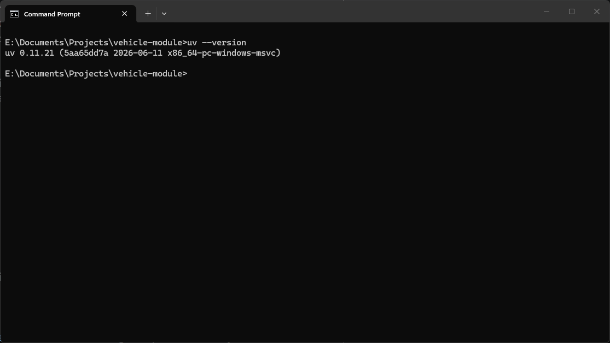
If you are using an older version of uv, it should still
work for the purposes of this workshop, but some of the outputs might
look different. Updating uv to the latest version will
depend on how you installed it.
- If you installed
uvwithpip, you can update it withpython -m pip install --upgrade uv. - If you installed
uvfrom binaries, you can useuv self update.
We can start off with a new project with UV by running the command
uv init. This will automatically create a couple files for
us:
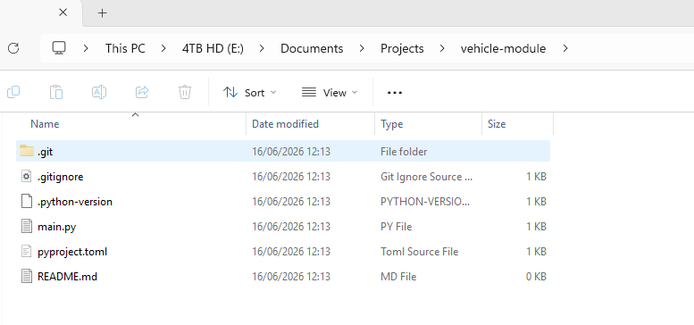
We can see that there are a few files created by this command:
-
.python-version: This file is used to optionally specify the Python version for the project. -
main.py: This is the main Python script for the project. -
pyproject.toml: This file is used to manage project dependencies and settings. -
README.md: This file contains human written information about the project. -
.gitignore: (Depending on your version of uv) This file specifies files and directories that should be ignored by git.
If we take a look at the pyproject.toml file, we can see
that it contains some basic information about our project in a fairly
readable format:
TOML
[project]
name = "vehicle-module-{my-name}"
version = "0.1.0"
description = "Add your description here"
readme = "README.md"
requires-python = ">=3.13"
dependencies = []The requires-python field may vary depending on the
exact version of python you’re working with.
Make sure to change {my-name} in the name
field to something unique, such as your GitHub username. This is
important later when we upload our package to TestPyPI, as package names
must be unique.
Creating a Virtual Environment
To create a virtual environment with UV, we can use the
uv venv command. This will create a new virtual environment
in a directory called .venv within our project folder.
Before we activate our environment, let’s quickly check the location of the current python executable you are using by starting a python interpreter and running the following commands:
Depending on your operating system, you may need to type
python3 instead of python to start the
interpreter.
You should see something like this:
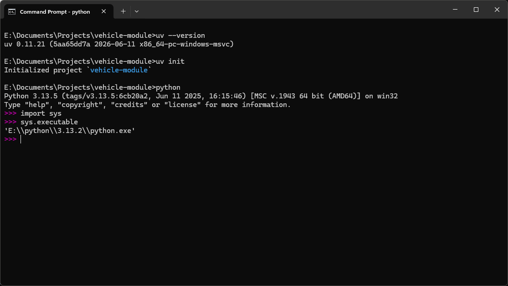
You can type exit to leave the python interpreter
The value printed after sys.executable will be the path
to the python executable that is started when you run the python
interpreter from your terminal. Now let’s activate our environment. The
exact command will depend on your operating system, but if you look
above the python code to the output of the uv venv command,
you should see the correct command.
If this command works properly, you should see that before your prompt is now some text in parenthesis:
(vehicle-module) E:\Documents\Projects\vehicle-module>Let’s start up the python interpreter again and check the location of our executable:
What you should now see is that the executable is located in the .venv/Scripts directory of our project:
(vehicle-module) E:\Documents\Projects\vehicle-module>python
Python 3.13.5 (main, Jun 12 2025, 12:42:35) [MSC v.1943 64 bit (AMD64)] on win32
Type "help", "copyright", "credits" or "license" for more information.
>>> import sys
>>> sys.executable
'E:\\Documents\\Projects\\vehicle-module\\.venv\\Scripts\\python.exe'Exit out of the interpreter and deactivate the virtual environment
with deactivate.
Git Commit and Pushing to our Repository
Some versions of uv will automatically create a
.gitignore file when you run uv init. If you
don’t see one in your project folder, you can create one manually.
We also want to create another file called .gitignore,
to control which files are added to our git repository. It’s generally a
good idea to create this file early on, and update it whenever you
notice files or folders you want to explicitly prevent from being added
to the repository.
We can create a gitignore from the command line with
type nul > .gitignore (Windows), or
touch .gitignore (Mac/Linux). There are several pre-written
gitignores that we can optionally use, but for this project we’ll
maintain our own. Open up the file and add the following lines to
it:
__pycache__/
dist/
*.egg-info/
scratch/A commonly used gitignore is the Python.gitignore maintained by GitHub. You can find it here: Python.gitignore from GitHub.
Next, let’s set up a repository on GitHub to store our code. We’ll make an entirely blank repository, with the same name as our project: “vehicle-module”.
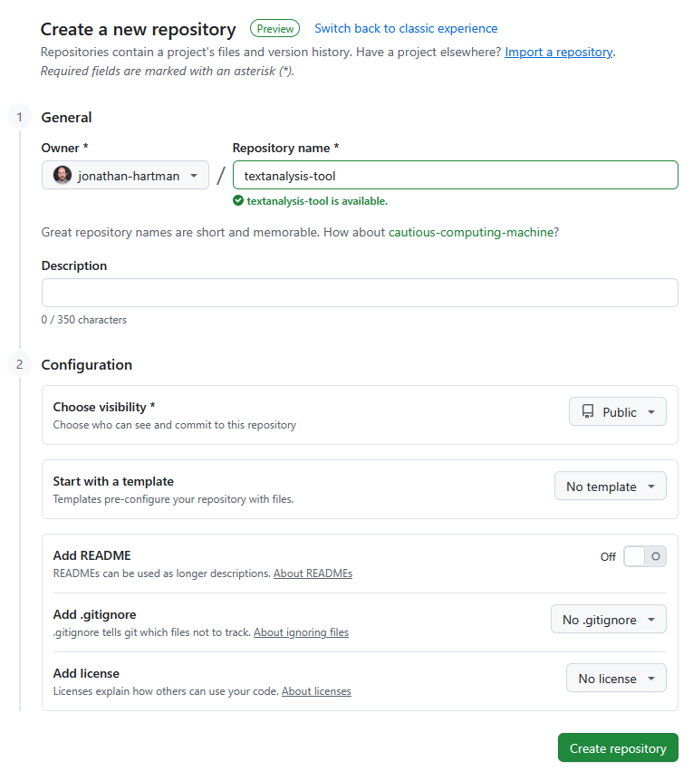
We’re creating the files on our local machine first, then the remote repository. There’s no reason you can’t go the other way around, creating the remote repository then cloning it to your local machine.
If you are using an older version of uv, the .git folder
may not be created as part of the uv init command. If this
is the case, you can create a git repository with the command
git init.
First, we’ll make an initial commit with the files that uv generated:
git add .gitignore .python-version README.md main.py pyproject.toml
git commit -m "Initial commit"Then we’ll follow the directions for creating a new repository:
git remote add origin https://github.com/{username}/vehicle-module.git
git branch -M main
git push -u origin mainWe are using https for our remote URL, but you can also
use ssh if you have that set up.
If all goes well, we’ll see our code appear in the new repository:
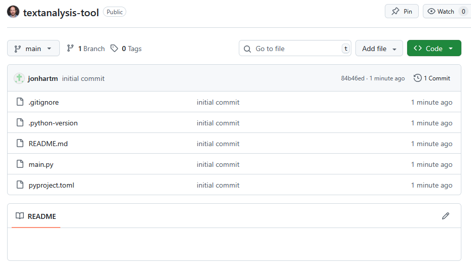
And with that, we’re ready to start writing our tool!
Challenge 1: Adding a Package Dependency
Now that we have our project set up, let’s add a project dependency.
Let’s say we needed to pull down data from a web API. We could use the
built-in urllib module, but it can be a bit clunky to work
with. A popular alternative is the requests package, which
provides a much nicer interface for making HTTP requests. Let’s add
requests to our project with UV.
Try the following command
uv add requestsTake a look at the pyproject.toml and
uv.lock files. What changed? What is the purpose of each
file?
The pyproject.toml file is a human readable file that
contains the list of packages that our project depends on. The
uv.lock file is a machine readable file that contains the
exact versions of all packages that were installed, including any
dependencies of the packages we explicitly installed.
Challenge 2: Adding a Package Dependency to a Group
Later on in this workshop, we will be writing some tests for our code
using the pytest package.
Try the following command:
uv add pytest --group devTake a look at the pyproject.toml and
uv.lock files. What changed? What is different about this
package compared to the requests package we installed in
the previous challenge? Why might this be useful?
- Setting up a virtual environment is useful for managing project dependencies.
- Using
uvsimplifies the process of creating and managing virtual environments. - There are several options other than
uvfor managing virtual environments, such asvenvandconda. - It’s important to version control your project from the start,
including a
.gitignorefile.
Content from Python Bits and Bobs
Last updated on 2026-06-23 | Edit this page
Overview
Questions
- What are some elements of python that are not covered in beginner courses but are still useful to know?
Objectives
Bits and Bobs
There are some elements of python that are fundamental elements of the language, but that are not typically covered in beginner courses, either because they are not strictly necessary to know to get started with programming, because they are only useful in edge cases, or because they are simply shorthand ways of doing things that are already possible in other ways. In this episode, we will cover some of these elements, and how they can be useful in your own code.
Tuple Unpacking
Tuple unpacking is a feature in Python that allows you to assign values from a tuple (or any iterable) to multiple variables in a single statement. This can make your code more readable and concise, as long as you use it responsibly.
Here’s an example of tuple unpacking in action:
PYTHON
# Without tuple unpacking
geo_coordinates = (50.4651, 6.03548)
latitude = geo_coordinates[0]
longitude = geo_coordinates[1]
# With tuple unpacking
latitude, longitude = geo_coordinatesIt can also be used to unpack values from a function that returns multiple values:
It’s a great shorthand, but keep in mind that it can make your code less readable if overused or used in complex situations.
Asterisk Unpacking
As a bonus, you can also use an asterisk * to unpack the
remaining values of a tuple into a list:
Or the double asterisk ** to unpack the remaining values
of a dictionary into another dictionary:
*args and **kwargs
You might have seen the *args and **kwargs
syntax in function definitions before. These are used to allow a
function to accept an arbitrary number of positional and keyword
arguments, respectively. This can be useful when you want to create a
function that can handle a variable number of inputs, or when you want
to pass arguments to another function without knowing in advance how
many arguments will be passed.
zip and enumerate
We can iterate over a dictionary using a for loop like this:
This works because the items() method of a dictionary
returns an iterable of key-value pairs. The zip function is
a built-in function that allows you to iterate over multiple iterables
at the same time. It takes two or more iterables as arguments and
returns an iterator that produces tuples containing the corresponding
elements from each iterable.
PYTHON
x_values = ["a", "b", "c"]
y_values = [1, 2, 3]
for x, y in zip(x_values, y_values):
print(x, y)The enumerate function is related, as it allows you to
iterate over an iterable while keeping track of the index of the current
item. It takes an iterable as an argument and returns an iterator that
produces tuples containing the index and the corresponding item from the
iterable.
Membership Testing
The keyword in can be used to quickly check if an
element is present in a list, tuple, set, or dictionary. This can be
useful for checking if a value exists in a collection without having to
write a loop or use a more complex method. Here’s an example:
Chained Comparison Operators
What if we have a situation where we want to check if a number is between two other numbers? We could use something like this:
PYTHON
my_number = int(input("Please enter a number: "))
if 10 < my_number and my_number < 20:
print("Good!")
else:
print("Not good!")but a more elegant way to do this is to use chained comparison operators:
PYTHON
my_number = int(input("Please enter a number: "))
if 10 < my_number < 20:
print("Good!")
else:
print("Not good!")This is both shorter and more readable.
any and all
The built-in functions any and all can be
used to check if any or all elements of an iterable are true,
respectively. This can be useful for checking if a list of conditions
are met without having to write a loop to check each condition
individually. Here’s an example:
PYTHON
available_toppings = ["pepperoni", "mushrooms", "green peppers"]
pizza1_toppings = ["pepperoni", "mushrooms"]
pizza2_toppings = ["pepperoni", "pineapple"]
can_make_pizza1 = all(topping in available_toppings for topping in pizza1_toppings)
can_make_pizza2 = all(topping in available_toppings for topping in pizza2_toppings)
print(f"Can make pizza 1: {can_make_pizza1}") # Output: True
print(f"Can make pizza 2: {can_make_pizza2}") # Output: FalseString Formatting
We have a couple options for formatting strings in Python:
format()
PYTHON
topping, price = "mushrooms", 1.50
formatted_string = "The price of {} is ${:.2f}".format(topping, price)
print(formatted_string) # Output: The price of mushrooms is $1.50f-strings
PYTHON
topping, price = "mushrooms", 1.50
formatted_string = f"The price of {topping} is ${price:.2f}"
print(formatted_string) # Output: The price of mushrooms is $1.50sprintf-style formatting
PYTHON
topping, price = "mushrooms", 1.50
formatted_string = "The price of %s is $%.2f" % (topping, price)
print(formatted_string) # Output: The price of mushrooms is $1.50The “.2f” part specifies that this number should be formatted as a floating-point number with 2 decimal places. You can also use other format specifiers, such as “,.d” for integers with commas as thousands separators, or “e” for scientific notation.
_ as a throwaway variable
You might sometimes see the underscore _ used as a
variable name in Python. This is a convention that indicates that the
variable is a “throwaway” variable, meaning that it is not going to be
used later in the code. This can be useful when you need to unpack a
tuple or list in a loop, but you don’t care about one of the values.
Here’s an example:
Challenge: Swapping Values
Challenge: Checking User Input
We have a small script that asks the user for a series of words that
are longer than 4 characters but shorter than 10 characters.
Additionally we want to make sure that none of their words are in the
banned list. Use the all and any functions to
complete the following code:
PYTHON
banned_words = ["hunter2", "secret", "turtle"]
user_words = input("Please enter a series of words, separated by spaces: ").split()
# Check that words are longer than 4 characters and shorter than 10 characters
valid_length = # Your code here
# Check that none of the words are in the banned list
not_banned = # Your code here
if valid_length and not_banned:
print("All words are valid!")PYTHON
banned_words = ["hunter2", "secret", "turtle"]
user_words = input("Please enter a series of words, separated by spaces: ").split()
# Check that words are longer than 4 characters and shorter than 10 characters
valid_length = all(4 < len(word) < 10 for word in user_words)
# Check that none of the words are in the banned list
not_banned = all(word not in banned_words for word in user_words)
if valid_length and not_banned:
print("All words are valid!")Challenge: Parse the Sensor Data
We have a sensor that is sending us data. Our colleague has already written some code to parse part of the data, but needs help to parse the rest of it. The data is in the following format:
PYTHON
sensor_data = "humidity,pressure,altitude:65%,129mb,103m"
measurements = sensor_data.split(":")[0].split(",") # Get a list of the measurement names
values = sensor_data.split(":")[1].split(",") # Get a list of the measurement valuesWe would like to print out the formatted measurements and their values like this:
Humidity: 65%
Pressure: 129mb
Altitude: 103mUse the zip function to combine the
measurements and values lists
Use tuple unpacking in a for loop to pull out the measurements and values from the zipped list.
Challenge: Use Chained Comparison Operators
Rewrite the following code using chained comparison operators:
PYTHON
temperature_outside = 34
temperature_inside = 29
if temperature_outside > 30 and temperature_inside < 25:
print("It's hot outside, but cool inside.")
elif temperature_outside < 25 and temperature_inside > 30:
print("It's cool outside, but hot inside.")
elif temperature_outside > 30 and temperature_inside > 30:
print("It's hot everywhere.")
else:
print("It's probably a nice day.")Note that chained comparison operators only work when something is in a range. So while we can use them for the first two conditions, we cannot use them for the third.
PYTHON
if temperature_outside > 30 > temperature_inside:
print("It's hot outside, but cool inside.")
elif temperature_outside < 25 < temperature_inside:
print("It's cool outside, but hot inside.")
elif temperature_outside > 30 and temperature_inside > 30:
print("It's hot everywhere.")
else:
print("It's probably a nice day.")Content from Iterables and Generators
Last updated on 2026-06-23 | Edit this page
Overview
Questions
- What is an iterable in Python?
- What is a generator in Python?
- How can I succinctly create a list or dictionary in Python?
- What are sets and how can I use them in Python?
Objectives
- Understand what makes an object iterable in Python.
- Learn how to create and use generators in Python.
- Understand the difference between iterables and generators.
- Learn how to use set operations.
- Understand how a
defaultdictworks and how to use it.
What is an Iterable?
This might be a new term, but you’ve certainly been working with
iterables as soon as you started learning python. Anything that you can
loop over in a for loop is an iterable, so this includes
basic data structures like lists, tuples, and dictionaries, as well as
strings.
More specifically, an iterable is any Python object that implements
the __iter__() method, which returns an iterator. An
iterator is an object that implements the __next__()
method, which returns the next item in the sequence when called.
What’s happening under the hood?
You may have heard that in python “Everything is an object”. This is
true, and it means that even basic data structures like lists and
dictionaries are actually objects that have their own defined methods
and attributes. You’ve probably already used some of these methods, like
when you use my_list.append(1) to add an item to a list or
"my_string".upper() to convert a string to uppercase.
The convention in python is to use the __ (double
underscore) to denote special methods that are not intended to be called
directly by the user. These are often called “dunder” methods (short for
“double underscore”). When you use a for loop to iterate
over an iterable, Python is actually calling the __iter__()
method of the iterable to get an iterator, and then calling the
__next__() method of the iterator to get each item in the
sequence.
We can test this in action by creating a simple list and using these methods directly:
List Comprehensions
Say we wanted to create a list of the squares of the numbers from 0
to 9. We could do this with a for loop like this:
However there’s a more concise way to do this using what’s called a list comprehension:
What’s going on here? This is called a list comprehension, and it’s a
concise way to create lists. The syntax is
[expression for item in iterable], where
expression is the value that will be added to the list for
each item in the iterable.
List comprehensions can also include an optional if
statement to filter items from the iterable. For example, if we only
wanted the squares of the even numbers from 0 to 9, we could do
this:
List comprehensions are very useful for creating lists, but if overused or used in complex ways, they can make your code harder to read. It’s important to strike a balance between conciseness and readability.
Dictionary Comprehensions
Related to list comprehensions are dictionary comprehensions, which
allow you to create dictionaries in a similar way. The syntax for a
dictionary comprehension is
{key_expression: value_expression for item in iterable}.
Generator Functions
A generator is a special type of iterable that allows you to generate values on the fly, rather than storing them all in memory all at once. This can be extremely useful when working with large data, or when you want to create an infinite sequence of values.
You can create a generator using a generator function, which is
defined like a normal function but uses the yield keyword
instead of return. When you call a generator function, it
returns a generator object, which is an iterator that can be used to
iterate over the values generated by the function.
Here’s an example of a simple generator function that performs a countdown:
When you call this function, it returns a generator object:
<generator object countdown at 0x000001238D3EBDC0>But if we call this generator in a for loop, it will
yield the values one at a time:
5
4
3
2
1
Blast off!We can also use the next() function to get the next
value from the generator:
PYTHON
counter = countdown(5)
print(next(counter)) # This will print 5
print(next(counter)) # This will print 4Generator Comprehensions
Just like we have list comprehensions and dictionary comprehensions, we also have generator comprehensions. The syntax for a generator comprehension is similar to a list comprehension, but it uses parentheses instead of square brackets:
This creates a generator that will yield the squares of the numbers
from 0 to 9. You can iterate over this generator in a for
loop or use the next() function to get the next value.
Sets and Set Operations
A set is an unordered collection of unique elements. In Python, you
can create a set using the set() function or by using curly
braces {}. For example:
Sets work just like lists, but they have some important differences that makes them very useful in certain situations:
- Sets are unordered, which means that the elements in a set do not have a specific order. This means that you cannot access elements in a set using an index like you can with a list.
- Sets do not allow duplicate elements. If you try to add a duplicate element to a set, it will simply be ignored.
- Sets support mathematical set operations like union, intersection, difference, and symmetric difference.
This makes sets very useful for tasks like removing duplicates from a list, checking for membership, and checking for overlap between two collections of data.
For a toy example, let’s say we are running a survey asking people what their favorite fruit is, and we want to find out just how many different fruits are in the list. We can use a set to do this:
PYTHON
fruit_survey_1 = ["apple", "banana", "orange", "apple", "grape", "banana"]
survey_1_set = set(fruit_survey_1)
print(survey_1_set){'grape', 'banana', 'orange', 'apple'}Then, let’s imagine we perform the survey again with a different group of people, and we want to compare the results to see which fruits are popular across both surveys. We can use set operations to do this:
PYTHON
fruit_survey_2 = ["banana", "kiwi", "grape", "melon", "orange", "kiwi"]
survey_2_set = set(fruit_survey_2)
# Find the union of the two sets (all fruits from both surveys)
all_unique_fruits = survey_1_set.union(survey_2_set)
print("Fruits in either survey:", all_unique_fruits)
# Find the intersection of the two sets (fruits that are in both surveys)
common_fruits = survey_1_set.intersection(survey_2_set)
print("Fruits in both surveys:", common_fruits)
# Find only the fruits that are in survey 1 but not in survey 2
unique_to_survey_1 = survey_1_set.difference(survey_2_set)
print("Fruits only in survey 1:", unique_to_survey_1)Output:
Fruits in either survey: {'banana', 'kiwi', 'apple', 'melon', 'grape', 'orange'}
Fruits in both surveys: {'banana', 'orange', 'grape'}
Fruits only in survey 1: {'apple'}Sets operate broadly similarly to lists, but the functions used to manipulate them are slightly different:
-
add()- Adds an element to the set. (instead ofappend()for lists) -
remove()- Removes an element from the set. (instead ofpop()for lists) -
union()- Returns a new set with all elements from both sets. (instead ofextend()for lists)
Remember that the syntax for a dictionary comprehension is
{key_expression: value_expression for item in iterable if condition}.
Challenge: Jagged Zips
What happens if we try to zip two iterables of different lengths? Take a look at the following code. What do you think will happen?
PYTHON
x_values = ["a", "b", "c"]
y_values = [1, 2]
for x, y in zip(x_values, y_values):
print(x, y)- It will raise an error because the iterables are of different lengths.
- It will zip the iterables together, but only up to the length of the shorter iterable.
- It will zip the iterables together, and fill in missing values with
None.
The correct answer is 2. The zip function will zip the
iterables together, but only up to the length of the shorter iterable.
This means that when zipping, you don’t need to necessarily have the
same number of elements in each iterable, but you need to keep this in
mind, since there is no explicit error raised.
Challenge: Set Operations
Here are two lists of students who attended two different classes. Use set operations to find out:
- Which students attended both classes?
- Which students attended only the first class?
- Which students attended only the second class?
- How many unique students attended at least one of the classes?
PYTHON
class_a_set = set(class_a_students)
class_b_set = set(class_b_students)
# Students who attended both classes
both_classes = class_a_set.intersection(class_b_set)
print("Students who attended both classes:", both_classes)
# Students who attended only the first class
only_class_a = class_a_set.difference(class_b_set)
print("Students who attended only the first class:", only_class_a)
# Students who attended only the second class
only_class_b = class_b_set.difference(class_a_set)
print("Students who attended only the second class:", only_class_b)
# Unique students who attended at least one class
num_unique_students = len(class_a_set.union(class_b_set))
print("Unique students who attended at least one class:", num_unique_students)- An iterable is any Python object that implements the
__iter__()method, which returns an iterator. - Iterators also implement the
__next__()method, which returns the next item in the sequence when called. - A generator is a special type of iterable that allows you to generate values on the fly, rather than storing them all in memory at once.
- Sets are unordered collections of unique elements that support mathematical set operations like union, intersection, difference, and symmetric difference.
Content from Collections & Iterables
Last updated on 2026-06-23 | Edit this page
Overview
Questions
- What built in modules come with python that can help with iterable objects like lists and tuples?
Objectives
- Learn how to use the
Counterobject to efficiently count values from an iterable. - Learn how to use the
dequeobject to efficiently handle FIFO (First In, First Out) operations. - Learn how to use the
combinationsfunction to return all possible selections without repetition.
collections / itertools
The collections and itertools modules have
useful tools for working with data more efficiently:
collections helps us store and organize data, while
itertools helps us iterate over and combine data.
The collections module allows us to use alternative data structures to Python’s built-in containers; like dict, list, set, and tuple.
Using collections module can solve some common data-handling problems in a simpler and cleaner way. Things like:
- How can I quickly count elements in a container?
- How can I easily add elements to a queue, that then removes them as they are not used?
- How can I quickly come up with all permutations of a list of objects?
How can collections make working with data easier?
Counting repeated values
Let’s start with a common problem: How many times do specific elements appear in a given list? Say we are working in a restaurant and want to know how popular each of our dishes are. We could write our own code to do this, using a dictionary to store the elements as we see them and incrementing the key each time we see them:
PYTHON
orders = ["pizza", "burger", "pizza", "sushi", "burger", "pizza"]
counts = {}
for order in orders:
if order not in counts:
counts[order] = 0
counts[order] += 1
print(counts)Output:
{'pizza': 3, 'burger': 2, 'sushi': 1}But we’re lazy! This is a common enough piece of code to write that
someone else has already written an implementation and added it to the
built-in python module collections:
PYTHON
from collections import Counter
orders = ["pizza", "burger", "pizza", "sushi", "burger", "pizza"]
my_counter = Counter(orders)
print(my_counter)Output:
Counter({'pizza': 3, 'burger': 2, 'sushi': 1})Here, thanks to the collections library, we don’t have to write the counting logic ourselves, instead we use the predefined Counter class that handles the counting for us.
But notice that the result we get is not a dict, but a
Counter object. This object can do many of the same things
as a dict, but has some additional methods that save us from writing
mode code again!
For example, let’s take our dictionary result from above. If we want to find the value that appear most frequently in the dictionary, we can start with something like this:
PYTHON
counts = {'pizza': 3, 'burger': 2, 'sushi': 1}
most_common = (None, 0)
for key, count in counts.items():
if count > most_common[1]:
most_common = key, count
print("Most Common value:", most_common)Output:
Most Common value: ('pizza', 3)So that works for our example, but it’s a couple lines of code to
add, which adds complexity. We could write a little function, or add
some comments, but the easiest thing to do by far is to just use the
Counter object, which comes pre-built with a method to do
exactly that:
PYTHON
most_common = my_counter.most_common(1) # first item from the most common (item, count) pair
print("Most Common value:", most_common[0])Output:
Most Common value: ('pizza', 3)Creating Queues
Another common task with iterable objects is to create a queue. Say our restaurant wants to create a system to track the the last three orders that were made, so we can see what is currently popular. We can make some code to do this, using a list to store the orders and removing them each time we add a new one:
PYTHON
def add_order(order, orders):
if len(orders) == 3:
orders.pop(0) # remove the first item in the list
orders.append(order)
delivery_updates = []
add_order("burger", delivery_updates)
add_order("noodles", delivery_updates)
add_order("pizza", delivery_updates)
print(delivery_updates)
add_order("sushi", delivery_updates)
print(delivery_updates)But again, this is a common enough problem that the
collections module has a built-in data structure to handle
it: deque, which stands for “double-ended queue”. A
deque allows us to add and remove items from both ends of
the queue efficiently, without having to write the logic ourselves:
PYTHON
from collections import deque
delivery_updates = deque(maxlen=3)
delivery_updates.append("burger")
delivery_updates.append("noodles")
delivery_updates.append("pizza")
print(delivery_updates)
delivery_updates.append("sushi")
print(delivery_updates)Output:
deque(['burger', 'noodles', 'pizza'], maxlen=3)
deque(['noodles', 'pizza', 'sushi'], maxlen=3)deque has several other useful methods - check out
help(deque).
How can itertools make working with iterables easier?
Like we have a bunch of tools in the collections module
to help us work with data in iterable forms, we also have a bunch of
tools in the itertools module to help us work with how we
iterate over data.
Many tools in the itertools package do not return a list
object directly; instead, they return an iterator object. The reason for
this is to optimize memory usage by generating values only when
needed.
Choosing groups of items
Let’s go back to our restaurant example. Supposed we are focusing on pizzas. We have a list of all the toppings we have, and we would like to know all the different combinations of toppings someone could order. As usual, let’s start by writing a simple implementation of this ourselves:
PYTHON
toppings = ["cheese", "mushroom", "pepperoni"]
topping_pairs = []
for i in range(len(toppings)):
for j in range(i + 1, len(toppings)):
topping_pairs.append((toppings[i], toppings[j]))
print(topping_pairs)Output:
Ok, this works, but that’s not the nicest code to read. We could
write a function to do this, or maybe add some comments or better
variable names, but as before, there’s a handy little python function
that we can use instead: itertools.combinations, which
returns all possible combinations of a specified length from an
iterable:
PYTHON
from itertools import combinations
toppings = ["cheese", "mushroom", "pepperoni"]
topping_pairs = combinations(toppings, 2)
print(list(combinations(toppings, 2)))Output:
We have to use list() to convert the combinations object
into a list, since the return value of combinations() is an
iterator, not a list. An iterator object can be iterated over, but it
does not support indexing or other list operations, instead generating
values on the fly as we loop through it.
Generators are far more memory efficient than lists, since they don’t have to store all the values in memory at once.
Creating ordered arrangements
Related to combinations - what if we want to know all of the different arrangements of toppings that we could put on a pizza? For example, if we have three toppings, what are all the different ways we could put those on a pizza?
The full code to do this ourselves would be a bit more complex than
the combinations example, so we’ll just skip right to the built-in
function that does this for us: itertools.permutations:
PYTHON
from itertools import permutations
toppings = ["cheese", "mushroom", "pepperoni"]
possible_sequences = permutations(toppings)
print(list(possible_sequences))Output:
[
('cheese', 'mushroom', 'pepperoni'),
('cheese', 'pepperoni', 'mushroom'),
('mushroom', 'cheese', 'pepperoni'),
('mushroom', 'pepperoni', 'cheese'),
('pepperoni', 'cheese', 'mushroom'),
('pepperoni', 'mushroom', 'cheese')
]Combining multiple iterables
Next, our restaurant is thinking of expanding our menu. Making it more into a nice sit-down place instead. We’ve decided to add some starters, and we want to know what different combinations of starters and mains we can have.
If we want to loop over multiple iterables as if they were one
iterable, we can use chain from itertools:
PYTHON
from itertools import chain
starters = ["soup", "salad"]
mains = ["pizza", "burger", "sushi"]
desserts = ["ice cream", "cake"]
full_menu = chain(starters, mains, desserts)
for dish in full_menu:
print(dish)Output:
soup
salad
pizza
burger
sushi
ice cream
cakeWhy would I want to use chain instead of just adding the
lists together with + or using extend()?
In our contrived example here, admittedly we could just add the lists
together, but depending on the use case there are a few reasons we might
want to use chain instead:
- Readability: Using
chaincan make it clearer that we are treating multiple iterables as one sequence. - Memory Efficiency:
chaincreates an iterator that generates items on the fly, which can be more memory efficient. - Lazy Evaluation: If the iterables are large or infinite,
chainallows us to iterate through them without needing to create a new list in memory. - Flexibility:
chaincan be used with any iterable, not just lists, and can handle a variable number of iterables without needing to concatenate them first.
Repeating values
Next, we’d like to create a rotating “specials” menu for our resturant. We have some ideas for dishes we want to feature, but we don’t have enough dishes to fill a whole week. We want to make sure that we cycle through all of the dishes we have, but we also want to make sure that we don’t repeat any dish until we’ve gone through all of them.
This is a perfect use case for itertools.cycle, which
creates an infinite iterator that cycles through all of the values in an
iterable, and then starts again from the beginning once it reaches the
end:
PYTHON
from itertools import cycle
orders = ["carbonara", "mussels", "steak", "salmon"]
rotating_orders = cycle(orders)
for day in ["Monday", "Tuesday", "Wednesday", "Thursday", "Friday", "Saturday", "Sunday"]:
print(f"{day}: {next(rotating_orders)}")Output:
Monday: carbonara
Tuesday: mussels
Wednesday: steak
Thursday: salmon
Friday: carbonara
Saturday: mussels
Sunday: steakWe should only use cycle() with a stopping condition,
like a fixed list of days or a range(), because it creates
an infinite iterator.
Challenge 1: Exhausting an Iterator
We defined earlier that an iterator is an object that implements the
__next__() method, but what happens if we call
__next__() on an iterator more times than there are items
in the iterable?
Take a look at this code, but don’t run it yet:
PYTHON
from itertools import combinations
toppings = ["cheese", "mushroom", "pepperoni"]
topping_pairs = combinations(toppings, 2)
print(next(topping_pairs))
print(next(topping_pairs))
print(next(topping_pairs))
print(next(topping_pairs)) # What happens here?Do you think that it will:
A. Print “None”, as there are no elements left in the iterator. B. Raise some kind of error. C. Print the first element again.
The correct answer is B. When we call next() on an
iterator that has no more items to return, it raises a
StopIteration exception. This is how Python signals that
the iterator has been exhausted and there are no more items to iterate
over.
We can handle this exception using a try-except block if we want to
avoid the program crashing, or we can use structures like for loops that
automatically handle the StopIteration exception for us
when iterating over an iterable.
Challenge 2: Print the top N most common values in a list
Start with the following code:
PYTHON
from collections import Counter
import random
random.seed(0)
car_brands = ["Toyota", "Honda", "Ford", "BMW", "Audi"]
car_sales = [random.choice(car_brands) for _ in range(1000)]
my_counter = Counter(car_sales)Write code to print the top 3 most common car brands in the
car_sales list. Your output should look something like
this:
Toyota: 225
BMW: 210
Ford: 200Remember that the Counter object has a method to return
the most common values, and it will return a list of tuples, where each
tuple contains the value and its count.
Challenge 3: Many Combinations
Let’s expand our pizza toppings example. We have 10 different toppings, and we just want to know how many different combinations of toppings we can have on a pizza, based on the number of toppings someone can choose. For example, if someone can only choose 3 toppings, how many different combinations of 3 toppings can we have? What about 4?
Here’s some starter code:
PYTHON
from itertools import combinations
toppings = [
"cheese",
"mushroom",
"pepperoni",
"olives",
"onions",
"sausage",
"bacon",
"pineapple",
"spinach",
"artichoke"
]
# Your code hereYour output should look like this:
Number of combinations with 1 toppings: 10
Number of combinations with 2 toppings: 45
Number of combinations with 3 toppings: 120
Number of combinations with 4 toppings: 210
Number of combinations with 5 toppings: 252
Number of combinations with 6 toppings: 210
Number of combinations with 7 toppings: 120
Number of combinations with 8 toppings: 45
Number of combinations with 9 toppings: 10
Number of combinations with 10 toppings: 1PYTHON
from itertools import combinations
toppings = [
"cheese",
"mushroom",
"pepperoni",
"olives",
"onions",
"sausage",
"bacon",
"pineapple",
"spinach",
"artichoke"
]
for i in range(1, len(toppings) + 1):
all_combinations = combinations(toppings, i)
print(f"Number of combinations with {i} toppings: {len(list(all_combinations))}")Challenge 4: When to use
chain?
We mentioned earlier that some of the reasons to use
chain are because of its performance and memory efficiency.
Try running the following code. What sort of results do you get?
Try increasing the number of items in the lists, and see how it affects the performance of the code.
PYTHON
import random
import sys
import time
from itertools import chain
# Create two large lists of random integers
random.seed(0)
list1 = [random.randint(0, 100) for _ in range(10000000)]
list2 = [random.randint(0, 100) for _ in range(10000000)]
# Version 1: Using list.extend
v1_starting_memory = sys.getsizeof(list1) + sys.getsizeof(list2)
v1_start_time = time.time()
combined_list = list1.copy()
combined_list.extend(list2)
sum_combined = sum(combined_list)
v1_end_time = time.time()
v1_ending_memory = sys.getsizeof(combined_list)
print(f"Version 1 (extend) - Time taken: {v1_end_time - v1_start_time:.4f} seconds")
print(f"Version 1 (extend) - Memory used: {v1_ending_memory - v1_starting_memory:,} bytes")
# Version 2: Using itertools.chain
v2_starting_memory = sys.getsizeof(list1) + sys.getsizeof(list2)
v2_start_time = time.time()
combined_chain = chain(list1, list2)
sum_combined_chain = sum(combined_chain)
v2_end_time = time.time()
v2_ending_memory = sys.getsizeof(combined_chain)
print(f"Version 2 (chain) - Time taken: {v2_end_time - v2_start_time:.4f} seconds")
print(f"Version 2 (chain) - Memory used: {v2_ending_memory - v2_starting_memory} bytes")
print("Sums match?", sum_combined == sum_combined_chain)The exact results will vary based on your machine, but you should see something like this:
PYTHON
Version 1 (extend) - Time taken: 1.9273 seconds
Version 1 (extend) - Memory used: -70,257,144 bytes
Version 2 (chain) - Time taken: 1.1214 seconds
Version 2 (chain) - Memory used: -1,670,257,152 bytes
Sums match? TrueAt the size of the data we are using in our toy examples here, the
speed difference may not be significant but the memory usage should be
far lower for chain than for extend. This is
because chain is creating an iterator that generates values
as we loop through it, rather than creating a new list in memory that
contains all the values from both lists.
Challenge 5: Efficient Data Processing with itertools
The following code will generate a large list of
PYTHON
import random
def generate_log(N=50):
users = ["Alice", "Bob", "Charlie", "David", "Eve"]
actions = ["login", "logout", "purchase", "view"]
for i in range(N):
yield {"user": random.choice(users), "action": random.choice(actions)}
log_entries = list(generate_log())Using the methods we’ve talked about from the itertools
module, write code that will answer the following questions about the
log entries:
- How many times did each user login?
- What are all the unique actions performed by each user?
- Bonus: What were the last 5 actions performed by each user? (See the last hint for details)
You will probably find the Counter,
defaultdict, and deque objects from the
collections module useful for this challenge.
For question one, you can use a list comprehension to filter the log
entries for the “login” action, and then use Counter to
count the occurrences.
Question 2 can be solved using a defaultdict that uses a
set as it’s default factory. Iterate over the log entries
and update the set. (remember that you can add to a set using the
add() method)
In order to store the last 5 actions for each user, we can use a
deque with a maximum length of 5. As we iterate over the
entries, earlier entries will be automatically removed from the deque
when new ones are added.
In order to do this for each user, we can use a
defaultdict that uses a deque as it’s default
factory, however we can’t just call
defaultdict(deque(maxlen=5)) because that would create a
single deque object for all users. Instead we can use a lambda function
to create a new deque for each user:
- To count the number of logins for each user, we can use
Counterfrom thecollectionsmodule:
PYTHON
from collections import Counter
user_events = [entry for entry in log_entries if entry["action"] == "login"]
login_counts = Counter(entry["user"] for entry in user_events)
print(login_counts)- To get all the unique actions performed by each user, we can use a
defaultdictwith aset:
PYTHON
user_unique_actions = defaultdict(set)
for entry in log_entries:
user_unique_actions[entry["user"]].add(entry["action"])
print({user: list(actions) for user, actions in user_unique_actions.items()})- To get the last 5 actions performed by each user, we can use
defaultdictfrom thecollectionsmodule and adequeto store the last 5 actions:
- The
collectionsmodule provides useful functions and objects for working with data more efficiently, such asCounter,deque, anddefaultdict. - The
itertoolsmodule provides useful functions for working with iterables, such ascombinations,permutations,chain, andcycle.
Content from The Logging Module
Last updated on 2026-06-23 | Edit this page
Overview
Questions
- What can I do to log my code more effectively than using print statements?
- How can I set up and customize the logging module in Python?
Objectives
- Demonstrate a small example of how to use the logging module in Python.
- Explain the importance of logging and how it differs from using print statements.
logging
When writing code in Python, we sometimes want to track what our
programs are doing. Using print() in a small script may
seem sufficient, but as the program grows, it becomes harder to
understand which function is running when, where an error occurred, and
which steps were successfully completed. This is exactly where logging
comes in.
Logging allows us to capture important events that occur while the program is running. This makes it easier for us to understand the program’s behavior and resolve issues.
print() simply prints a message to the screen. It’s
useful for quick checks while the program is running, such as “Did I get
here? What’s this value here?” but all messages appear to have the same
level of importance. Logging, on the other hand, assigns meaning and a
severity level to messages.
Let’s look at an example of a little banking application that transfers money between accounts.
PYTHON
import random
random.seed(42)
accounts = {
"Liz": 500,
"Jack": 3000,
"Kenneth": 10000
}
def transfer_money(sender, receiver, amount):
if amount <= 0:
return
# Check if sender has enough balance
if accounts[sender] < amount:
return
# Perform the transfer
accounts[sender] -= amount
accounts[receiver] += amount
transfer_money("Liz", "Jack", 200) # valid
transfer_money("Jack", "Kenneth", -20) # invalid - negative
transfer_money("Liz", "Kenneth", 1000) # invalid - exceeds balance
transfer_money("Kenneth", "Liz", 2000) # largeWe want to track the transfer process, so we add some print statements to our code:
PYTHON
accounts = {
"Liz": 500,
"Jack": 3000,
"Kenneth": 10000
}
def transfer_money(sender, receiver, amount):
print(f"Transfer initiated: {sender} -> {receiver}, amount: {amount}")
if amount <= 0:
print("Transfer failed: Invalid amount.")
return
if amount > 1000:
print(f"Large transfer detected: {amount}")
# Check if sender has enough balance
if accounts[sender] < amount:
print(f"Transfer failed: {sender} has insufficient funds.")
return
# Perform the transfer
accounts[sender] -= amount
accounts[receiver] += amount
print(f"Transfer successful: {sender} sent {amount} to {receiver}")
transfer_money("Liz", "Jack", 200) # valid
transfer_money("Jack", "Kenneth", -20) # invalid - negative
transfer_money("Liz", "Kenneth", 1000) # invalid - exceeds balance
transfer_money("Kenneth", "Liz", 2000) # largeOutput:
Transfer initiated: Liz -> Jack, amount: 200
Transfer successful: Liz sent 200 to Jack
Transfer initiated: Jack -> Kenneth, amount: -20
Invalid amount. Transfer cancelled.
Transfer initiated: Liz -> Kenneth, amount: 1000
Transfer failed: Liz has insufficient funds.
Transfer initiated: Kenneth -> Liz, amount: 2000
Large transfer detected: 2000
Transfer successful: Kenneth sent 2000 to LizThat certainly makes it much easier to understand what’s going on! However this might be a little too much information. What if we only want to see when something goes wrong, like the invalid amount or the insufficient funds? Or maybe we want to be notified about large transfers, but not about every successful transfer?
We could start adding a bunch of extra logic, where we assign the importance of a message to a value and check if that value is above a threshold before printing it. But this makes our code more complex and harder to maintain. But luckily, this is exactly what the logging module is designed for!
PYTHON
import logging
logging.basicConfig()
accounts = {
"Liz": 500,
"Jack": 3000,
"Kenneth": 10000
}
def transfer_money(sender, receiver, amount):
logging.info(f"Transfer initiated: {sender} -> {receiver}, amount: {amount}")
if amount <= 0:
logging.error("Transfer failed: Invalid amount.")
return
if amount > 1000:
logging.warning(f"Large transfer detected: {amount}")
# Check if sender has enough balance
if accounts[sender] < amount:
logging.error(f"Transfer failed: {sender} has insufficient funds.")
return
# Perform the transfer
accounts[sender] -= amount
accounts[receiver] += amount
logging.info(f"Transfer successful: {sender} sent {amount} to {receiver}")
transfer_money("Liz", "Jack", 200) # valid
transfer_money("Jack", "Kenneth", -20) # invalid - negative
transfer_money("Liz", "Kenneth", 1000) # invalid - exceeds balance
transfer_money("Kenneth", "Liz", 2000) # largeOutput:
ERROR:root:Transfer failed: Invalid amount.
ERROR:root:Transfer failed: Liz has insufficient funds.
WARNING:root:Large transfer detected: 2000Logging has five levels of importance. Generally, the levels are as follows:
- DEBUG: Detailed information, typically of interest only when diagnosing problems.
- INFO: Confirmation that things are working as expected.
- WARNING: An indication that something unexpected happened, but the software is still working as expected.
- ERROR: Due to a more serious problem, the software has not been able to perform some function.
- CRITICAL: A serious error, indicating that the program itself may be unable to continue running.
We can set the minimum level of importance that we want to see in our
logs by configuring the logging module. In the example above, we can add
the parameter level=logging.DEBUG to
basicConfig(). This will show all messages, as DEBUG is the
lowest level.
If we are working in a Jupyter Notebook, we will need to restart the
kernel in order to update the logging configuration after changing the
basicConfig() parameters. This is because the logging is
set up only once per session, and subsequent calls to
basicConfig() will not have any effect.
Why do logging?
Our goal in using logging is to leave traces of the program’s behavior and the errors it encounters, so that we can resolve issues more easily using these traces. If the program is running into issues, we can add debugging or info messages to the code to help understand what is going on. Once we fix the issue, we can leave these messages in the code to assist us in the future, but we can raise the logging level so that we are not overwhelmed by too much information while the program is running smoothly.
What to log?
Everything does not have to be logged. That is why we need to log only those events that matter.
Deciding what really matters might be challenging since we need to foresee which piece of information is critical during troubleshooting.
We must never log confidential data such as API keys, passwords, tokens, user personal information, etc.
Custom logging format
Imagine you’re running a payment script overnight and something goes wrong. Which log is more useful?
ERROR:root:Transfer failed: Invalid amount.
ERROR:root:Transfer failed: Liz has insufficient funds.10:23:01 - INFO - Transfer failed: Invalid amount.
10:23:04 - ERROR - Transfer failed: Liz has insufficient funds.The second version tells us exactly when it happened and what went
wrong without opening the code. We do set our own format by setting the
format parameter in basicConfig(), using
placeholder fields like %(asctime)s for the timestamp and
%(levelname)s for the severity level.
PYTHON
logging.basicConfig(
level=logging.INFO, format="%(asctime)s - %(levelname)-6s - %(message)s", datefmt="%H:%M:%S"
)For a full list of available fields, see the official documentation.
Challenge 1: Logging Levels
What will be the output of the following code snippet?
PYTHON
import logging
logging.basicConfig(level=logging.WARNING)
logging.debug("This is a debug message")
logging.info("This is an info message")
logging.warning("This is a warning message")
logging.error("This is an error message")- A. Only the warning message will be printed.
- B. Both the warning and error messages will be printed.
- C. Only the debug and info messages will be printed.
- D. The debug, info, and warning will all be printed.
The correct answer is B. Both the warning and error messages will be printed. The logging level indicates the minimum severity level that will be logged.
Challenge: Add Logging to a Function
Given the following code snippet:
PYTHON
def calculate_discount(price, discount_percent):
if discount_percent < 0:
return price # Invalid discount
if discount_percent > 100:
return 0 # Maximum discount
final_price = price * (1 - discount_percent / 100)
return final_priceAdd logging statements to the calculate_discount
function to log the following events:
- When the function is called, log the input price and discount percentage at the INFO level.
- If the discount percentage is invalid (less than 0), log an ERROR message.
- If the discount percentage is greater than 100, log a WARNING message.
When you run the following code:
PYTHON
import logging
logging.basicConfig(level=logging.INFO)
calculate_discount(100, 20) # valid
calculate_discount(100, -10) # invalid - negative
calculate_discount(100, 150) # invalid - exceeds 100You should see something like the following output:
INFO:root:Calculating discount for price: 100, discount_percent: 20
INFO:root:Calculating discount for price: 100, discount_percent: -10
ERROR:root:Invalid discount percentage: less than 0
INFO:root:Calculating discount for price: 100, discount_percent: 150
WARNING:root:Discount percentage exceeds 100, setting to maximum discountPYTHON
def calculate_discount(price, discount_percent):
logging.info(f"Calculating discount for price: {price}, discount_percent: {discount_percent}")
if discount_percent < 0:
logging.error("Invalid discount percentage: less than 0")
return price # Invalid discount
if discount_percent > 100:
logging.warning("Discount percentage exceeds 100, setting to maximum discount")
return 0 # Maximum discount
final_price = price * (1 - discount_percent / 100)
return final_priceChallenge: Custom Logging Format
Given the following code snippet:
PYTHON
import logging
logging.basicConfig(level=logging.INFO)
logging.info("Application started")
logging.warning("Low disk space")
logging.error("Failed to connect to database")Modify the following code so that our logs look like this:
[2026-06-21 19:48:17] [INFO] (Line 7) - Message: Application started
[2026-06-21 19:48:17] [WARNING] (Line 8) - Message: Low disk space
[2026-06-21 19:48:17] [ERROR] (Line 9) - Message: Failed to connect to databaseRefer to the official documentation for the available fields and how to set a custom logging format.
We can set a custom logging format by using the format
parameter in basicConfig(). We will use the
asctime field for the timestamp, the levelname
field for the severity level, and the lineno field for the
line number.
- The
loggingmodule is useful for tracking the behavior of our program. - Using logging levels makes it easy to filter important messages from less important ones.
- Custom logging formats can provide more context and make logs easier to understand.
Content from Decorators & Caching
Last updated on 2026-06-23 | Edit this page
Overview
Questions
- What is a decorator and how can it be useful?
- What built in functionalities come with the
functoolsmodule? - What is caching and how can it speed up my code?
Objectives
- Implement a simple decorator using
functools. - Explain how caching works and how to use it with
functools. - Demonstrate how to use
singledispatchto handle different input types in a function.
functools
The functools module is a collection of higher-order
tools that simplify working with functions and callable objects. Much
like the itertools and collections modules,
functools is part of the Python standard library and
contains useful additions to functions and callable objects.
In the last few episodes, we’ve talked about various methods and
functions that we come with python that we can use to avoid “reinventing
the wheel” and writing code for simple tasks that have already been
solved. Within the functools module, we have several tools
called “decorators” that can help us with these kinds of situations, and
can be easily added onto an existing function to modify its behavior
without changing the function’s code!
What is a decorator?
You might have seen a decorator in the wild already - on the line
before a function definition, you can sometimes see a line that starts
with an @ symbol, followed by a name. This is a decorator,
and it is a way to modify the behavior of a function without changing
its code.
We can write our own simple decorator to see how it works. Let’s say we want to time exactly how long a function takes to run and print a little message before and after the function runs. We can write a decorator to do this for us:
PYTHON
import time
def timer(func):
def wrapper(*args, **kwargs):
print(f"Starting {func.__name__}...")
start_time = time.time() # Note the start time
result = func(*args, **kwargs) # Run the function with any arguments it might have
end_time = time.time() # Note the end time
print(f"{func.__name__} finished in {end_time - start_time:.4f} seconds.")
return result # In case the function returns something, we want to return that as well
return wrapper
@timer
def slow_function():
time.sleep(2)
print("Finished sleeping!")
slow_function()Caching
Sometimes executing a function can take a long time. This could be for a number of reasons. Maybe the function is performing a calculation that takes a long time, or maybe it is making a request to an external API that takes a few seconds to respond. In these cases, if the response is going to be the same for the same input, we can use a caching decorator to store the result of the function call in memory.
Here’s an example of a function that calculates the price of a product. Here, the calculation is trivial, so we’ve added a time.sleep statement to simulate a long calculation:
PYTHON
import time
def calculate_price(product):
print("Calculating price...")
time.sleep(2)
return product * 2
print(calculate_price(10))
print(calculate_price(10))
print(calculate_price(20))
print(calculate_price(10))
print(calculate_price(20))Output:
Calculating price...
20
Calculating price...
20
Calculating price...
40
Calculating price...
20
Calculating price...
40You can see that calling this function over and over results in having to wait the two seconds each time it is called, even for instances where the input is the same.
Let’s try using the cache decorator from the
functools module. We don’t need to modify our function code
at all - just add the @cache decorator above the function
definition:
PYTHON
from functools import cache # Add this import
@cache # Add this decorator
def calculate_price(product):
print("Calculating price...")
return product * 2
print(calculate_price(10))
print(calculate_price(10))
print(calculate_price(20))
print(calculate_price(10))
print(calculate_price(20))Output:
Calculating price...
20
20
Calculating price...
40
20
40We still have to wait for the first call to
calculate_price(10) and calculate_price(20),
but after that, the results are cached and returned immediately for
subsequent calls with the same input. We can even see that the print
statement is not being executed for each of the repeated calls, which
tells us that python is entirely skipping the function code and just
returning the cached result.
What can be problematic about caching?
We can theoretically store an unlimited amount of data using a cache.
Our toy example above is only storing integers, but imagine if we were
caching API requests that were several MB in size, and we were making
hundreds of requests per second. If we don’t want to fill memory with
unnecessary data, we can solve this problem with
lru_cache.
The lru_cache decorator works similarly to a
cache but allows us to set a limit on the amount of data
stored.
LRU means Least Recently Used. When the cache is full, Python removes the result that has not been used for the longest time.
PYTHON
from functools import lru_cache
import time
@lru_cache(maxsize=3)
def get_weather(city):
time.sleep(1) # simulates an API call
return f"Sunny in {city}"Here, the cache can store only 3 results.
PYTHON
get_weather("Berlin")
get_weather("Tokyo")
get_weather("Paris")
print(get_weather.cache_info()) # Access the cache infoOutput:
CacheInfo(hits=0, misses=3, maxsize=3, currsize=3)At this point, the cache is full:
Berlin, Tokyo, ParisIf we call a cached city again, it becomes a cache hit:
Output:
CacheInfo(hits=1, misses=3, maxsize=3, currsize=3)Now "Berlin" was used recently. If we add a new city,
one old result must be removed:
Output:
CacheInfo(hits=1, misses=4, maxsize=3, currsize=3)The cache still contains only 3 results, because
maxsize=3. Since "Tokyo" was the least
recently used city, it is removed to make space for
"Sydney".
Paris, Berlin, SydneyIf we call "Tokyo" again, it has to be calculated
again:
Output:
CacheInfo(hits=1, misses=5, maxsize=3, currsize=3)Tokyo was no longer in the cache, so this call is a
cache miss.
Handling different input types
Using another decorator in functools, we can define different actions
based on the input type a function receives. This decorator is called
singledispatch.
If you are coming from another programming language, this is similar to function overloading.
For example, we can define a default function for an input type for which no specific version has been defined:
PYTHON
from functools import singledispatch
@singledispatch
def search(data):
print(f"Cannot process type: {type(data).__name__}")Then we can write some special cases for strings, integers and lists:
Challenge 1: Caching Calculations
We have a calculation that takes a long time to run, and we want to cache the results to speed up our program. What is the correct way of applying a decorator to this function?
1:
2:
3:
4:
Either option 3 or 4 is correct. Option 3 uses the cache
decorator, which caches all results without limit. Option 4 uses the
lru_cache decorator, which caches results with a limit of
128 results.
Option 1 is incorrect because the cache decorator does
not take any arguments, so the parentheses are not needed.
Option 2 is incorrect because it does not use the @
symbol to apply the decorator to the function.
Challenge 2: Writing our own decorator
We have an application that needs to access data stored on a device in our lab. Unfortunately, the device is somewhat temperamental, and sometimes fails to respond to our request. Your colleague has already written some code to retrieve data from the device, but at the moment it’s a while loop that uses a try/except block to keep trying until it gets a response:
PYTHON
##### Everything between these lines is mocking an unreliable device. Do not modify this code. #####
import random
random.seed(42)
class DeviceError(Exception):
pass
class Device:
def __init__(self):
self.collected = 0
def __iter__(self):
return self
def __next__(self):
print("+++ Attempting to access next reading... +++")
if self.collected >= 10:
raise StopIteration
if random.random() < 0.2: # 20% of the time, the device fails
raise DeviceError("Device not responding")
self.collected += 1
return f"datapoint_{self.collected}"
def reset(self):
self.collected = 0
####################################################################################################
flaky_device = Device()
results = []
while len(results) < 10:
try:
data = next(flaky_device)
print("retrieved data!")
results.append(data)
except DeviceError:
print("retrying...")
print(results)This works, but we now have the issue where we have a number of different devices that we need to access, and we don’t want to have to write the same while loop with a try/except block for each device. See if you can write a decorator that will handle the retrying for us, so we can just call the function that retrieves the data from the device, and it will automatically retry if it fails.
Some starter code:
PYTHON
# Replace the underscores with your function names
def _____(func):
def _______(*args, **kwargs):
# ... your code here ...
return _______
# Decorate this function
def get_next_reading(device):
return next(device)
# This is our new while loop for retrieving the data.
results = []
while len(results) < 10:
results.append(get_next_reading(flaky_device))
print(results)The wrapper function should contain the while loop and the try/except block, returning the result if the function call is successful, and retrying if it fails.
PYTHON
def retry(func):
def wrapper(*args, **kwargs):
while True:
try:
result = func(*args, **kwargs)
print("retrieved data!")
return result
except DeviceError:
print("retrying...")
return wrapper
@retry
def get_next_reading(device):
return next(device)
results = []
while len(results) < 10:
results.append(get_next_reading(flaky_device))
print(results)- The
functoolsmodule provides useful tools for working with functions, such ascache,lru_cache,singledispatch, andwraps. - Caching can speed up repeated function calls by storing results in memory, but it can also consume memory if not used carefully.
- The
singledispatchdecorator allows us to define different behaviors for a function based on the type of its input. - The
wrapsdecorator helps preserve the original function’s metadata when creating decorators.
Content from Creating A Module
Last updated on 2026-06-23 | Edit this page
Overview
Questions
- How do I create a Python module?
- How do I import a local module into my code?
Objectives
- Create a Python module with multiple files
- Import functions from a local module into a script
Project Organization
In order to keep our project organized, we’ll start by creating some directories to put our code in. So that we can keep the “source” code of our project separate from other aspects, we’ll start by creating a directory called “src”. In this directory, we’ll create a second directory with the name of our module, in this case “vehicle_module”. We can also delete the “main.py” file that was generated automatically by uv. Your project folder should now look like this:
vehicle-module/
├── src/
│ └── vehicle_module/
├── .venv
├── .gitignore
├── .python-version
├── pyproject.toml
└── README.mdNote that the interior folder has an underscore instead of a hyphen.
We will import the module using the name of the interior folder,
vehicle_module. This is important as hyphens are not a
valid character in Python module names.
Next, we’ll create a file called __init__.py in the
src/vehicle_module directory. This file will make Python
treat the directory as a package. Next to the __init__.py
file, we can create other Python files that will contain the code for
our module.
The __init__.py file is a special filename in python
that indicated that the directory should be treated as a package. Often
these files are simply blank, however we can also include some
additional code to initialize the package or set up any necessary
imports, as we will see later.
Note that this not only applies to the top-level directory of the
package, but also to any subdirectories that we want to include as part
of the package! Basically, anything that we want to be able to easily
import into our code should have an __init__.py file in its
directory.
If you have a directory without an __init__.py file, you
can still import code from it, but you will need to use the full path to
the file in your import statement.
Let’s create a code file now, called horn_noises.py and
put a simple function in it:
Our project folder should now look like this:
vehicle-module/
├── src/
│ └── vehicle_module/
│ ├── __init__.py
│ └── horn_noises.py
├── .gitignore
├── .python-version
├── pyproject.toml
└── README.mdWe want to be able to use this function in our code, so let’s make it
accessible by adding a line to our __init__.py file:
This tells python that when we import the vehicle_module
package, it should also import the horn_noises module that
we have in the same directory.
Previewing Our Module
It’s all well and good to write some code in here, but how can we actually use it? Let’s create a python script to test our module.
Let’s create a directory called “tests”, and start a new file called
vehicle_module_tests.py in it.
Add the following code to it:
PYTHON
import vehicle_module
result = vehicle_module.horn_noises.honk_horn(2)
if result == "Honk! Honk! ":
print("Test passed!")
else:
print("Test failed!")Our project folder should now look like this:
vehicle-module/
├── src/
│ └── vehicle_module/
│ ├── __init__.py
│ └── horn_noises.py
├── tests/
│ └── vehicle_module_tests.py
├── .gitignore
├── .python-version
├── pyproject.toml
└── README.mdOne of the really nice things about using uv is that we
can replace python in our commands with uv run
and it will use the environment we have created for the project to run
the code. At the moment, this doesn’t make a difference, but once we
start adding dependencies to our project we’ll see how useful this
is.
Let’s run the script from our command line. If you’re in the root
directory of the project, your command will look something like
uv run tests/vehicle_module_tests.py.
Aaaand… It doesn’t work!
PYTHON
E:\Documents\Projects\vehicle-module>uv run tests/vehicle_module_tests.py
Traceback (most recent call last):
File "E:\Documents\Projects\vehicle-module\tests\vehicle_module_tests.py", line 1, in <module>
from vehicle_module.horn_noises import honk_horn
ModuleNotFoundError: No module named 'vehicle_module'The reason for this is that we never actually told python where it can find our code!
The Python PATH
When you run a command like import pandas, what python
actually does is search the a series of directories in order looking for
a module file called pandas.py. We can see what directories
will be checked by printing the sys.path variable. Start up
a python shell in the terminal and run the following code:
Exactly what you see will depend on your specific machine, but what
you should see is a list of directories that python will check when you
try to import a module. This includes the current working directory
(’’), as well as any directories that are included in the
PYTHONPATH environment variable.
We are only interested in checking our current code, not in
installing it as a package. However because we have the
__init__.py file in our package directory, if we add the
exact or relative path to our package directory to our
sys.path variable, python will look there for modules as
well.
Let’s add a quick line to the top of our testing script to add our specific module directory to the path:
PYTHON
import sys
sys.path.insert(0, "./src")
import vehicle_module
result = vehicle_module.horn_noises.honk_horn(2)
if result == "Honk! Honk! ":
print("Test passed!")
else:
print("Test failed!")This time it works! And if we modify the honk_horn
function to print out something slightly different, we can see that
running the script changes the output right away!
We used sys.path.insert instead of
sys.path.append because we want to give our module
directory the highest priority when searching for modules. This way, if
there are any naming conflicts with other installed packages, our local
module will be found first.
Ideally you would never be working with a package name that has a conflict elsewhere in the path directories, but just in case, this avoids some potential issues.
Dot Notation in Imports
You probably noticed that our function call mimics the file and
directory structure of the project. We have the project directory
(vehicle_module), then the filename
(horn_noises), and finally the function name
(honk_horn). Python treats all of these similarly when
trying to locate a function or module. We can also modify our import to
make the code a little neater:
PYTHON
import sys
sys.path.insert(0, "./src")
from vehicle_module import horn_noises
result = horn_noises.honk_horn(2)
if result == "Honk! Honk! ":
print("Test passed!")
else:
print("Test failed!")or even better:
PYTHON
import sys
sys.path.insert(0, "./src")
from vehicle_module.horn_noises import honk_horn
result = honk_horn(2)
if result == "Honk! Honk! ":
print("Test passed!")
else:
print("Test failed!")For simplicity here, we are using the
from ... import ... syntax to import only the function we
need from the module. This way we don’t have to include the module name
every time we call the function.
This is a common practice in python, however the absolute best practice would be to import the entire module and then call the function with the module name, as in the first example. This way we avoid potential naming conflicts with functions from other modules, as well as providing clarity about where the function is coming from when reading the code.
If the shorter import syntax is so bad, why would I want to type it all out? Can’t I just use the shorter syntax? And maybe add a comment to clarify where the function is coming from?
Yes, you absolutely can! The dot-notation used in python pathing can
use .. to refer to the parent directory, or even
... to refer to a grandparent directory.
The reason we’re not doing this here is for clarity, as recommended in PEP8.
Challenge 1: Add a Sub Module
Create a directory under src/vehicle_module called
efficiency and add a file called fuel.py with
a function called “calculate_liters_per_100km that prints out the
following:
calculate_liters_per_100km(km=50, liters=2.5):
>>> 5.0How do you call this function from your testing script and check that it is working properly?
Don’t forget to add a __init__.py file to the
efficiency directory as well!
Add a line to the __init__.py file in the
vehicle_module directory to import the
efficiency submodule, as well as a line to the
__init__.py file in the efficiency directory
to import the fuel module.
Just like we used the dot notation to specify the file and function we wanted earlier, we can also use it to specify the directory.
Challenge 2: Inter-Module imports
We have some tests with some simple functions, but what happens when
we have functions in two files that need to call each other? Start a new
file in the vehicle_module directory called
engine_noise.py and add the following code to it:
We’re using the honk_horn function from the
horn_noises.py file, but how do we import it into this new
file?
Challenge 3: Check that our engine noise function is working
We never added a test to check that our
play_engine_sound function is working properly. Add a test
for this function in our testing script.
Make sure that you’ve added the file to the __init__.py
file in the vehicle_module directory so that it can be
imported!
Our test script should now look something like this:
PYTHON
import sys
sys.path.insert(0, "./src")
import vehicle_module
result = vehicle_module.horn_noises.honk_horn(2)
if result == "Honk! Honk! ":
print("Test passed!")
else:
print("Test failed!")
result = vehicle_module.engine_noise.play_engine_sound(3000)
if result == "Honk! \nVroom! Engine at 3000 RPM":
print("Test passed!")
else:
print("Test failed!")
result = vehicle_module.efficiency.fuel.calculate_liters_per_100km(km=50, liters=2.5)
if result == 5.0:
print("Test passed!")
else:
print("Test failed!")If you followed along with the entire episode and did both challenges, your project directory should now look something like this:
vehicle-module/
├── src/
│ └── vehicle_module/
│ ├── __init__.py
│ ├── horn_noises.py
│ ├── engine_noise.py
│ └── efficiency/
│ └── fuel.py
├── tests/
│ └── vehicle_module_tests.py
...- Python modules are simply directories with an
__init__.pyfile in them - You can add the path to your module directory to
sys.pathto make it available for import - You can use dot notation in your imports to specify the module, file, and function you want to use
Content from Class Objects
Last updated on 2026-06-23 | Edit this page
Overview
Questions
- What is a class object?
- How can I define a class object in Python?
- How can I use a class object in my module?
Objectives
- Create a Class object in our module.
- Demonstrate how to use our Class object in a sample script.
What is a Class Object?
You can think of a class object as a kind of “blueprint” for an object. It defines what properties the object can have, and what methods it can perform. Once a class is defined, you can create any number of objects based on that class, each of which is referred to as an “instance” of that class.
As an example, let’s imagine a Bank Account. A Bank Account has many properties and can do many things, but for our purposes, let’s limit them slightly. Our Bank Account will have an account holder and balance, and it will be able to deposit, withdraw, and check the balance.
The account holder and balance are all “properties” of the bank account. Depositing, withdrawing, and checking the balance are all “methods” of the bank account. Here’s a diagram of our bank account object:

In python we can define a class object like this:
PYTHON
class BankAccount:
def __init__(self, account_holder, account_number, balance = 0.0):
self.account_holder = account_holder
self.account_number = account_number
self.balance = balance
def deposit(self, amount):
if amount > 0:
self.balance += amount
else:
raise ValueError("Deposit amount must be positive")
def withdraw(self, amount):
if amount > 0:
if self.balance >= amount:
self.balance -= amount
else:
raise ValueError("Insufficient funds")
else:
raise ValueError("Withdrawal amount must be positive")
def get_balance(self):
return self.balanceThe convention in python is that all classes should be named in CamelCase, with no underscores. There are no limits enforced by the interpreter but it is good practice to follow the standards of the python community.
The get_balance method is an example of a “getter”
method, which simply exposes a property of the class. In this case, it
allows us to access the balance property of the class
without directly accessing the variable itself. This is a common pattern
in object-oriented programming, and it can be useful for a number of
reasons, such as allowing us to add additional logic when accessing the
property (e.g. checking if the balance is negative before returning it),
or allowing us to change the internal representation of the property
without affecting the external interface of the class.
Python has a special decorator called @property that
allows us to define getter methods in a more elegant way - we’ll get to
decorators in a later episode.
Some of this might look familiar if you think about how we define
functions in Python. There’s a def keyword, followed by the
function name and parentheses. Inside the parentheses, we can define
parameters, and these parameters can contain default values. We can also
include type hints, for both parameters and return values. However all
of this is indented one level, underneath the class
keyword, which is followed by our class name.
Note that this is just our blueprint - it doesn’t refer to any
specific bank account, just the general idea of a bank account. Also
note the __init__ method. This is a special method which is
called whenever you “instantiate” a new object. The parameters for this
function are supplied when we first create an object and function
similarly to a method, in that if no default value is provided, it is
required in order to create the object, and if a default value is
provided, it is optional.
An instance of a bank account, in this case called “my_account” might look something like this:

What exactly is “an instance”?
An instance is how we refer to a specific object that has been created from a class. The class is the “blueprint”, while the instance is the actual object that is created based on that blueprint.
In our example, my_account is an instance of the
BankAccount class. It has its own specific values for the
properties defined in the class (balance, account_holder), and it can
use the methods defined in the class (deposit, withdraw,
get_balance).
Also note that each of the methods within the class object definition
starts with a “self” argument. This is a reference to the current
instance of the class, and is used to access variables that belong to
the class. In our example, we store the balance and account_holder as
properties of the class. When we call the get_balance
method, we use self.balance to refer to the current
instance’s balance property.
We can create a new instance of our BankAccount class
like this:
This sets the account_holder property to “Jimmy”, the
account_number property to 12345, and the
balance property to 100.0, but only for this specific
instance of the BankAccount class. If we create
another instance, it will have its own account_holder,
account_number, and balance properties, which
can be different from the first instance. We can check the properties of
our instance like this:
PYTHON
print(my_account.account_holder) # Output: Jimmy
print(my_account.account_number) # Output: 12345
print(my_account.balance) # Output: 100.0We can create another instance of the BankAccount
class:
PYTHON
another_account = BankAccount(account_holder="Mike", account_number=67890, balance=2000.0)
print(another_account.account_holder) # Output: Mike
print(another_account.account_number) # Output: 67890
print(another_account.balance) # Output: 2000.0Modifying the properties of one instance does not affect the properties of another instance:
A Class object for Our project
Let’s create a class object for our vehicle module. Since we’re going
to create some useful objects and methods for working with vehicles,
let’s define a Car class.
What properties and methods might we want to include in our Car class?
- Make / Model / Year
- Color
- Fuel
- Honk its horn
- Paint it a color
- Make engine noises
Lets start writing our class object in a new file:
src/vehicle_module/car.py:
PYTHON
class Car:
def __init__(self, make, model, year, color = "grey", fuel = "gasoline"):
self.make = make
self.model = model
self.year = year
self.color = color
self.fuel = fuel
self.speed = 0
def honk_horn(self):
return "Honk! Honk!"
def paint(self, new_color):
self.color = new_color
def make_engine_noise(self):
if self.speed <= 10:
return "putt putt"
else:
return "vroom!"Our class object Car is a “blueprint” for a collection
of methods. When we define it, we need to provide the required
parameters for the __init__ method, which are
make, model, and year. We can
optionally provide color and fuel, which will
default to “grey” and “gasoline” if we don’t provide them.
The __init__ method is called as soon as the object is
created, and we can see that in addition to storing the parameters to
their self counterparts, there is an additional property
called self.speed. This property is used to store the
current speed of the car. It is referenced in the
make_engine_noise method, which returns a different string
depending on the value of self.speed.
Principle of Least Astonishment (or, We’re All Adults Here)
Unlike other programming languages, python doesn’t have the concept
of “private” or “internal” variables and methods. Instead there is a
convention which says that any variable or method that is intended for
internal use should be prefixed with an underscore
(e.g. content). This is however just a convention - there
is nothing stopping you from accessing these variables and methods from
outside the class if you really want to.
There are also three methods that we’ve defined -
honk_horn, paint, and
make_engine_noise. None of these will be called directly on
the class itself, but rather on instances of the class that we create
(as indicated by the use of self within the class methods).
Note that the paint and make_engine_noise
methods reference the self.color and
self.speed properties. The self keyword refers
to the specific instance of the class itself, and so it has
access to all of its properties and methods, including the
self.color and self.speed properties.
Trying out Our Class Object
Let’s try out our new class object.
Next, let's create another test file. Our last one was called `vehicle_module_test.py`, so let's call this
`car_class_test.py`:
```python
import sys
sys.path.insert(0, "./src")
from vehicle_module.car import Car
total_tests = 3
passed_tests = 0
failed_tests = 0
# Check that we can create a Car object
car = Car(make="Toyota", model="Corolla", year=2020)
if car.make == "Toyota" and car.model == "Corolla" and car.year == 2020:
passed_tests += 1
else:
failed_tests += 1
# Test the methods
if car.honk_horn() == "Honk! Honk!":
passed_tests += 1
else:
failed_tests += 1
if car.make_engine_noise() == "putt putt":
passed_tests += 1
else:
failed_tests += 1
print(f"Total tests: {total_tests}")
print(f"Passed tests: {passed_tests}")
print(f"Failed tests: {failed_tests}")Now we’ll run this file using our uv environment:
You should see the output:
Total tests: 3
Passed tests: 3
Failed tests: 0Challenge: What does this code do?
Take a look at the following code. Without running it yourself, what is the output of the final line?
PYTHON
class Cat:
def __init__(self, name, age):
self.name = name
self.age = age
self.is_sleeping = False
def meow(self):
if self.is_sleeping:
return "Zzz..."
else:
return "Meow!"
def sleep(self):
self.is_sleeping = True
def hear(self, sound):
if sound == "food tin":
self.is_sleeping = False
else:
self.is_sleeping = self.is_sleeping
my_cat = Cat(name="Squire Julian Gingivere", age=14)
my_cat.sleep()
my_cat.hear("psst psst psst!")
my_cat.sleep()
print(my_cat.meow())
my_cat.hear("food tin")
my_cat.hear("dinner time!")
print(my_cat.meow())The output of the final line will be “Meow!”. In order to know the
output, we need to follow the state of the instance variable
is_sleeping throughout the code:
PYTHON
my_cat = Cat(name="Squire Julian Gingivere", age=14) # is_sleeping = False
my_cat.sleep() # is_sleeping = True
my_cat.hear("psst psst psst!") # is_sleeping = True (no change)
my_cat.sleep() # is_sleeping = True (no change)
print(my_cat.meow()) # Output: "Zzz..." (because is_sleeping == True - no effect on is_sleeping)
my_cat.hear("food tin") # is_sleeping = False (because sound == "food tin")
my_cat.hear("dinner time!") # is_sleeping = False (no change)
print(my_cat.meow()) # Output: "Meow!" (because is_sleeping == False)Challenge: Make a Class
Try your hand at creating your own class called “Dog”. Try to write it such that the following code will run with the following output:
PYTHON
my_dog = Dog(name="Wally", breed="Mixed", age=12)
print(my_dog.name)
print(my_dog.make_sound())
print(my_dog.fetch())Output:
Wally
Aroooo!
Yeah you can get the ball yourself.Challenge: Update the Dog Class
Edit the Dog class so that the fetch method
accepts a parameter called item and returns a string that
says “Yeah you can get the {item} yourself.” where {item}
is replaced with the value of the item parameter.
Example usage:
PYTHON
my_dog = Dog(name="Wally", breed="Mixed", age=12)
print(my_dog.fetch("ball"))
print(my_dog.fetch("toy"))Output:
Yeah you can get the ball yourself.
Yeah you can get the toy yourself.Bonus: Add a parameter to the init method called
favorite_toy that defaults to “tennis ball”. Then, update
the fetch method so that if the item parameter
matches the favorite_toy property, it returns “That’s my
favorite toy! I’ll get it for you!” instead.
PYTHON
class Dog:
def __init__(self, name, breed, age):
self.name = name
self.breed = breed
self.age = age
def make_sound(self):
return "Aroooo!"
def fetch(self, item):
return f"Yeah you can get the {item} yourself."And for the bonus:
PYTHON
class Dog:
def __init__(self, name, breed = "Mixed", age = 0, favorite_toy = "tennis ball"):
self.name = name
self.breed = breed
self.age = age
self.favorite_toy = favorite_toy
def make_sound(self):
return "Aroooo!"
def fetch(self, item):
if item == self.favorite_toy:
return "That's my favorite toy! I'll get it for you!"
else:
return f"Yeah you can get the {item} yourself."Challenge: Update the Dog Class Again
Update the constructor of the Dog class so that it has
default values for the breed and age
parameters. The default value for breed should be “Mixed”,
and the default value for age should be 0.
Running the following code should work without error and produce the following output:
PYTHON
my_dog = Dog(name="Molly", breed="Black Labrador")
print(my_dog.name)
print(my_dog.breed)
print(my_dog.age)
my_other_dog = Dog(name="Buddy", age=5)
print(my_other_dog.name)
print(my_other_dog.breed)
print(my_other_dog.age)
my_neighbors_dog = Dog(name="Garth")
print(my_neighbors_dog.name)
print(my_neighbors_dog.breed)
print(my_neighbors_dog.age)Output:
Molly
Black Labrador
0
Buddy
Mixed
5
Garth
Mixed
0PYTHON
class Dog:
def __init__(self, name, breed = "Mixed", age = 0):
self.name = name
self.breed = breed
self.age = age
def make_sound(self):
return "Aroooo!"
def fetch(self, item):
return f"Yeah you can get the {item} yourself."As with writing python functions, we can provide default values for
parameters for our class in the __init__ method. This
allows us to create instances of the class without having to provide
values for every parameter every time, which can be useful in many
situations.
Challenge: Validate the Dog Class
Add a check to ensure that:
- The
nameparameter is a string and is not an empty string. - The
breedparameter is a string and is not an empty string. - The
ageparameter is an integer and is greater than or equal to 0.
If any of these checks fail, raise a ValueError with an
appropriate error message.
You can include these checks either in the __init__
method or in a separate validation method that is called from the
__init__ method.
You can use isinstance() to check the type of a
variable.
You can use raise ValueError("Your error message here")
to raise a ValueError with a custom error message.
PYTHON
class Dog:
def __init__(self, name, breed = "Mixed", age = 0):
if not isinstance(name, str) or not name:
raise ValueError("Name must be a non-empty string")
if not isinstance(breed, str) or not breed:
raise ValueError("Breed must be a non-empty string")
if not isinstance(age, int) or age < 0:
raise ValueError("Age must be an integer greater than or equal to 0")
self.name = name
self.breed = breed
self.age = age
def make_sound(self):
return "Aroooo!"
def fetch(self, item):
return f"Yeah you can get the {item} yourself."- Python classes are defined using the
classkeyword, followed by the class name and a colon. - The
__init__method is a special method that is called when an instance of the class is created. - Class methods are defined like normal functions, but they must
include
selfas the first parameter.
Content from More On Class Objects
Last updated on 2026-06-23 | Edit this page
Overview
Questions
- What are these methods that have
__before and after their names? - What are static properties and methods, and how do they differ from instance properties and methods?
- What are the
@property,@classmethod, and@staticmethoddecorators, and how do they work?
Objectives
- Add a custom
__str__method to our Car class to specify how it should be represented as a string. - Add a property to our Car class to calculate the age of the car based on the current year and the year it was made.
- Add a static property to our Car class to keep track of how many cars have been created, and a class method to retrieve this count.
Expanding on Class Objects
In the previous episode, we saw how to define a simple class object in python, and how to create instances of that class. In this episode, we will expand on that knowledge and see how to add more functionality to our class objects, and how to use some of the built-in features of python classes.
Dunder Methods
The __init__ method is called a “dunder” (double
underlined) method in python. There are a number of other dunder methods
that we can define, that will interact with various built-in functions
and operators. For example, we can define a __str__ method,
that will allow us to specify how our object should be represented as a
string when we call str() on it. Likewise, we can define
__eq__, which would tell python how to behave when we
compare two objects for equality.
Several dunder methods are created automatically when we define a
class, such as __repr__, which provides a string
representation of the object for debugging purposes, and
__class__, which provides a reference to the class of the
object.
Let’s go back to our bank account example. We can see a list of all
of the dunder methods our object has by using the dir()
function:
These all have basic implementations that are created automatically when we define the class, but we can override these with our own implementations if we want to add specific behavior.
Try this for example: Let’s define two class instances with identical properties, and then ask python if they are the same:
PYTHON
account1 = BankAccount(account_holder="Todd", account_number=123, balance=100.0)
account2 = BankAccount(account_holder="Todd", account_number=123, balance=100.0)
print(account1 == account2) # Output: FalseUnder the hood, the == operator calls the
__eq__ method of the class. We can view the signature of
this method by using the help() function:
Help on wrapper_descriptor:
__eq__(self, value, /) unbound builtins.object method
Return self==value.So it accepts a single parameter, value, which is the
object that we are comparing to. The self parameter is the
instance of the class that we are calling the method on. The method
should return True if the two objects are considered equal,
and False otherwise.
This is because the == operator is comparing the memory
addresses of the two objects, which are different. If we want to compare
the properties of the two objects instead, we can define our own
__eq__ method that tells python that two
BankAccount objects are equal if their
account_holder, account_number, and
balance properties are all the same.
PYTHON
class BankAccount:
def __init__(self, account_holder, account_number, balance = 0.0):
self.account_holder = account_holder
self.account_number = account_number
self.balance = balance
def __eq__(self, other):
return (self.account_holder == other.account_holder and
self.account_number == other.account_number and
self.balance == other.balance)
def deposit(self, amount):
if amount > 0:
self.balance += amount
else:
raise ValueError("Deposit amount must be positive")
def withdraw(self, amount):
if amount > 0:
if self.balance >= amount:
self.balance -= amount
else:
raise ValueError("Insufficient funds")
else:
raise ValueError("Withdrawal amount must be positive")
def get_balance(self):
return self.balanceRunning the same code as before will now give us the output:
PYTHON
account1 = BankAccount(account_holder="Todd", account_number=123, balance=100.0)
account2 = BankAccount(account_holder="Todd", account_number=123, balance=100.0)
print(account1 == account2) # Output: TrueThere are a large list of dunder methods that we can customize, and they can be used to add a lot of additional functionality to our classes. You can find a full list of them here: https://docs.python.org/3/reference/datamodel.html#special-method-names
Static Properties
We’ve been dealing entirely with instance methods so far, which are stored on the specific instance of the class that is created when we call the constructor. However we can also define static properties and methods, which are stored on the class itself, and not on any specific instance. These allow us to define functionality that is related to the class, but doesn’t operate on any specific instance of the class.
Let’s add a static property to our BankAccount class
that automatically assigns the next available account number to each new
account that is created, rather than having to pass it in as a parameter
to the constructor:
PYTHON
class BankAccount:
# Static property to keep track of the next available account number
next_account_number = 10000
def __init__(self, account_holder, balance = 0.0):
self.account_holder = account_holder
BankAccount.next_account_number += 1
self.account_number = BankAccount.next_account_number
self.balance = balance
# ... rest of the class definition ...Running our code from earlier, we can see that the account numbers are now automatically assigned:
PYTHON
my_account = BankAccount(account_holder="Jimmy", balance=100.0)
print(my_account.account_holder) # Output: Jimmy
print(my_account.account_number) # Output: 10001
print(my_account.balance) # Output: 100.0
another_account = BankAccount(account_holder="Mike", balance=2000.0)
print(another_account.account_holder) # Output: Mike
print(another_account.account_number) # Output: 10002
print(another_account.balance) # Output: 2000.0We can still manually set the account number if we want to, but if we don’t, it will automatically be assigned for us.
Decorators in Classes
Python has a number of built-in decorators that we can use to modify
the behavior of our class methods. There are a couple of decorators that
are specific to classes, such as @staticmethod and
@property, which allow us to more easily define our
classes.
A decorator is a special kind of function that modifies the behavior
of another function. They are defined using the @ symbol,
followed by the name of the decorator function. In this case, we use the
@staticmethod decorator to indicate that the following
method is a static method, so this line must be placed directly above
the method definition.
In our BankAccount class, we currently have a method
called get_balance() that returns the current balance of
the account. The user can call this method like
my_account.get_balance(), but it would be more natural to
access the balance as a property, like my_account.balance.
We can use the @property decorator to make this
possible:
PYTHON
class BankAccount:
def __init__(self, account_holder, balance = 0.0):
# ... rest of the constructor ...
self._balance = balance
# ... rest of the class definition ...
@property
def balance(self):
return self._balanceNow, we can access the balance as a property, without having to call a method:
PYTHON
my_account = BankAccount(account_holder="Jimmy", balance=100.0)
print(my_account.balance) # Output: 100.0Similarly, we can explicitly define class or static methods using the
@classmethod and @staticmethod decorators,
which can be useful for defining functionality that is related to the
class, but doesn’t operate on any specific instance of the class. For
example, suppose we wanted to add a method to check if a deposit is
valid - it should be a positive integer, and it shouldn’t exceed a
certain limit. We can define this as a static method, since it doesn’t
operate on any specific instance of the class:
PYTHON
class BankAccount:
# ... rest of the class definition ...
@staticmethod
def is_valid_deposit(amount):
return amount > 0 and amount <= 10000We can call this method directly on the class, without needing to create an instance of the class:
PYTHON
print(BankAccount.is_valid_deposit(500)) # Output: True
print(BankAccount.is_valid_deposit(-100)) # Output: False
print(BankAccount.is_valid_deposit(15000)) # Output: FalseAs well as calling it within the instance methods of the class:
PYTHON
class BankAccount:
# ... rest of the class definition ...
def deposit(self, amount):
if BankAccount.is_valid_deposit(amount):
self._balance += amount
else:
raise ValueError("Invalid deposit amount")This let’s us keep our code organized and modular - if the rules for
defining a valid deposit change, we only need to update the
is_valid_deposit method, and all of the code that relies on
it will automatically use the updated logic.
Updating our Car Class
Let’s go back to our Car class and make some
updates.
Create a custom __str__ method
PYTHON
class Car:
def __init__(self, make, model, year, color = "grey", fuel = "gasoline"):
self.make = make
self.model = model
self.year = year
self.color = color
self.fuel = fuel
self.speed = 0
def honk_horn(self):
return "Honk! Honk!"
def paint(self, new_color):
self.color = new_color
def make_engine_noise(self):
if self.speed <= 10:
return "putt putt"
else:
return "vroom!"
def __str__(self):
return f"A {self.color} {self.year} {self.make} {self.model} that runs on {self.fuel}."Add a static property and a class method to keep track of how many cars have been created
PYTHON
class Car:
car_count = 0
def __init__(self, make, model, year, color = "grey", fuel = "gasoline"):
# ... rest of the constructor ...
Car.car_count += 1
@classmethod
def get_car_count(cls):
return cls.car_countChallenge 1: Identify the mistake
The following code is supposed to define a Bird class
that inherits from the Animal class and overrides the
whoami method to provide a specialized message. However,
there is a mistake in the code that prevents it from working as
intended. Can you identify and fix the mistake?
When we try to run the code we get the following error:
---------------------------------------------------------------------------
TypeError Traceback (most recent call last)
Cell In[7], line 14
11 return f"I am a bird. My name is irrelevant."
13 animal = Bird("boo")
---> 14 animal.whoami()
TypeError: Bird.whoami() takes 0 positional arguments but 1 was givenWe have forgotten to include the self parameter in the
whoami method of the Bird class. The
self parameter is required for instance methods in Python,
as it refers to the instance of the class. Without it, the method cannot
access instance properties or methods.
Challenge 2: The str Method
We looked at the __eq__ method as an example of a dunder
method that we can define to customize the behavior of our class
objects. Another common dunder method to define is the
__str__ method, which allows us to specify how our object
should be represented as a string when we call str() on
it.
Try to define a __str__ method for the following class
object that will create the following output when run:
PYTHON
class Animal:
def __init__(self, name):
print(f"Creating an animal named {name}")
self.name = name
# Your __str__ method here
animal = Animal("Moose")
print(str(animal))output:
Creating an animal named Moose
I am an animal named Moose.Challenge 3: Class Methods
In addition to instance methods, which operate on an instance of a
class (and so have self as the first parameter), we can
also define class methods. These are methods that operate on the class
itself, and so have cls as the first parameter. Instead of
the @staticmethod decorator, they are defined using the
@classmethod decorator.
Start with the following code. We want to be able to easily keep track of how many animals of each species we have created since our code started running. To do this, we will need three things:
- A class property that is a dictionary that keeps track of how many animals of each species have been created.
- A way to update this dictionary every time a new instance of the
Animalclass is created.
- A way to update this dictionary every time a new instance of the
- A class method that allows us to easily get the count of how many animals of a specific species have been created.
PYTHON
class Animal:
def __init__(self, name, species):
print(f"Creating an animal named {name}")
self.name = name
self.species = species
# Your class method hereWhen we run the following code, we should see the output:
PYTHON
animal1 = Animal(name="Moose", species="Alces alces")
animal2 = Animal(name="Mouse", species="Mus musculus")
animal3 = Animal(name="Moose", species="Alces alces")
animal4 = Animal(name="Squirrel", species="Sciurus carolinensis")
animal5 = Animal(name="Horseshoe Crab", species="Limulus polyphemus")
print(Animal.get_animal_count("Alces alces")) # Output: 2
print(Animal.get_animal_count("Mus musculus")) # Output: 1- Dunder methods are special methods that start and end with double underscores.
- Static properties and methods are defined on the class itself, rather than on instances of the class.
- We can use the
@propertydecorator to define properties that can be accessed like attributes. - We can use the
@classmethoddecorator to define methods that operate on the class itself, rather than on instances of the class. - We can use the
@staticmethoddecorator to define methods that don’t operate on either the class or instances of the class, but are still related to the class in some way.
Content from Extending Classes with Inheritance
Last updated on 2026-06-23 | Edit this page
Overview
Questions
- What if we want classes that are similar, but handle slightly different cases?
- How can we avoid duplicating code in our classes?
Objectives
- Explain the concept of inheritance in object-oriented programming
- Demonstrate how to create a subclass that inherits from a parent class
- Show how to override methods and properties in a subclass
Extending Classes with Inheritance
So far you may be wondering why classes are useful. After all, all we’ve really done in essence is make a tiny module with some functions in it that are slightly more complicated than normal functions. One of the real powers of classes is the ability to limit code duplicate through a concept called inheritance.
Inheritance
Inheritance is a way to create a new class that contains all of the same properties and methods as an existing class, but allows us to add additional new properties and methods, or to override existing methods. This allows us to create a new class that is a specialized version of an existing class, without having to rewrite a whole bunch of code.
Taking a look at our Car class from earlier, we might want to create
a new class for a specific type of bank account, like a Savings account
or a Checking account. Both kinds of accounts will have the same basic
properties and methods, but they will also have some additional
properties and methods that are specific to the type of account, or
properties that are set by default, like our interest_rate
property.
But since both types of accounts are still accounts, they will share a lot of the same properties and methods. Rather than repeating all of the code from the Account class in both our new classes, we can use inheritance to create our new classes based on the Account class:
In python, this would look something like this:
PYTHON
class BankAccount:
# Static property to keep track of the next available account number
next_account_number = 10000
def __init__(self, account_holder, balance = 0.0):
self.account_holder = account_holder
BankAccount.next_account_number += 1
self.account_number = BankAccount.next_account_number
self._balance = balance
# ... the rest of the BankAccount class ...
class SavingsAccount(BankAccount):
def __init__(self, account_holder, balance = 0.0, interest_rate = 0.01):
super().__init__(account_holder=account_holder, balance=balance)
self.interest_rate = interest_rate
def apply_interest(self):
self._balance += self._balance * self.interest_rate
class CheckingAccount(BankAccount):
def __init__(self, account_holder, balance = 0.0, overdraft_limit = 500.0):
super().__init__(account_holder=account_holder, balance=balance)
self.overdraft_limit = overdraft_limit
def withdraw(self, amount):
if self._balance - amount < -self.overdraft_limit:
raise ValueError("Withdrawal would exceed overdraft limit.")
self._balance -= amount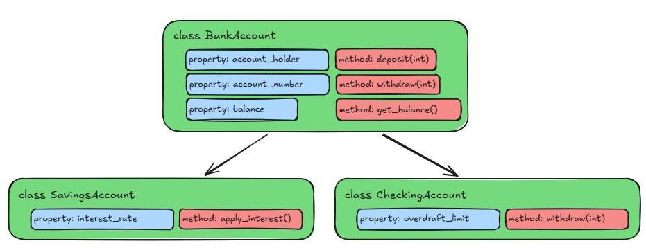
Note that the withdraw method in the
CheckingAccount class is overridden to provide a different
implementation than the one in the BankAccount class. This
is called method overriding, and it allows us to define a different
behavior for a method in a subclass. When we call the
withdraw method on an instance of
CheckingAccount, it will use the overridden method, rather
than the one defined in the BankAccount class.
However in SavingsAccount, we do not override the
withdraw method, so it will use the one defined in the
BankAccount class.
More on overriding methods in a moment.
You can see that the SavingsAccount class is defined in a similar way
to the BankAccount class, but it inherits from the BankAccount class by
including it in parentheses after the class name. The
__init__ method of the CheckingAccount class also has a
call to super().__init__(). The super()
function is a way to refer specifically to the parent class, in this
case, the BankAccount class. This allows us to call the
__init__ method of the BankAccount class, which sets up all
of the properties that a BankAccount has.
Applying Inheritance to Our Car Class
For our Car class, let’s create different sub classes
depending on the kind of engine the car has. We can have a
GasolineCar class and an ElectricCar class
that both inherit from the Car class. Both these classes
will share a lot of the same properties and methods, but might have some
additional properties and methods that are specific to the type of car.
Let’s add the following code to our
src/vehicle_module/car.py file:
PYTHON
class Car:
car_count = 0
def __init__(self, make, model, year, color = "grey", fuel = "gasoline"):
# ... the rest of the Car class ...
class GasolineCar(Car):
pass # For now, a GasolineCar is just a Car, so we don't need to add any additional properties or methods
class ElectricCar(Car):
def __init__(self, make, model, year, color = "grey", fuel = "electricity"):
super().__init__(make=make, model=model, year=year, color=color, fuel=fuel)
def make_engine_noise(self):
return "hmmmmmm"Couldn’t you do something like this?
PYTHON
class ElectricCar(Car):
def __init__(self, make, model, year, color = "grey"):
super().__init__(make=make, model=model, year=year, color=color, fuel="electricity")Yes, you could - however this would change the signature of the
__init__ method in the ElectricCar class,
which means that you would not be able to create an instance of
ElectricCar using the same parameters as you would for a
GasolineCar. Anyone trying to use the
ElectricCar class would have to know that it specifically
has a slightly different __init__ method than the other
cars.
This is not necessarily a bad thing, but it can lead to confusion if
you have a lot of different subclasses that all have different
__init__ methods. By keeping the same signature for the
__init__ method, we can ensure that all of our car classes
can be instantiated in the same way, which makes it easier to use them
interchangeably.
Overriding Methods
Notice that in the ElectricCar class, we have overridden
the make_engine_noise method to provide a different
implementation. This is an example of how we can override methods and
properties in a subclass to provide specialized behavior. When we create
an instance of ElectricCar, it will use the
make_engine_noise method defined in the
ElectricCar class, rather than the one defined in the
Car class.
When overriding methods, it’s important to ensure that the new method has the same signature as the method being overridden. This means that the new method should have the same name, number of parameters, and return type as the method being overridden.
Testing our Inherited Classes
Now let’s try out our classes in our little test file. Let’s update
our tests/car_class_tests.py file to test our new
GasolineCar and ElectricCar classes:
PYTHON
import sys
sys.path.insert(0, "./src")
from vehicle_module.car import Car, ElectricCar, GasolineCar
total_tests = 6
passed_tests = 0
failed_tests = 0
# ... existing tests for Car class ...
# Test creating a GasolineCar
gas_car = GasolineCar(make="Toyota", model="Camry", year=1996, color="Maroon")
if gas_car.fuel == "gasoline":
passed_tests += 1
else:
failed_tests += 1
# Test creating an ElectricCar
electric_car = ElectricCar(make="Skoda", model="Elroq", year=2024, color="White")
if electric_car.fuel == "electricity":
passed_tests += 1
else:
failed_tests += 1
# Test the make_engine_noise method of ElectricCar
if electric_car.make_engine_noise() == "hmmmmmm":
passed_tests += 1
else:
failed_tests += 1You should get some output that looks like this:
Total tests: 6
Passed tests: 6
Failed tests: 0Abstract Base Classes
If we’re thinking about this from the context of a game, there’s
actually maybe a level of less specificity that is below even the
Car class, which is just a general Vehicle
class. Cars are going to have a lot of the things we defined so far, but
some of the elements are maybe more general to all vehicles. We could
create a Vehicle class that has all of the properties and
methods that are common to all vehicles, and then have the
Car class inherit from the Vehicle class. This
way, we can have a more general class that defines the basic properties
and methods.
This is a great use case for something called an “abstract base class”. An abstract base class is a class that is meant to be inherited from, but is not meant to be instantiated on its own. It can define abstract methods, which are methods that are declared but not implemented in the abstract base class. Subclasses that inherit from the abstract base class are then required to implement the abstract methods, or else the construction of the subclass will fail.
Abstract base classes are implemented in Python using the
abc module. Let’s create a new file called
src/vehicle_module/vehicle.py and add the following code to
it:
PYTHON
from abc import ABC, abstractmethod
class Vehicle(ABC):
car_count = 0
def __init__(self):
self.speed = 0
Vehicle.car_count += 1
@abstractmethod
def make_engine_noise(self):
pass
@classmethod
def get_car_count(cls):
return cls.car_countYou can see that we’ve transferred some of the properties and methods
from the Car class to the Vehicle class, since
they feel like they are more general to all vehicles, rather than just
cars. We have also defined an abstract method called
make_engine_noise with the @abstractmethod
decorator, which means that any class that inherits from
Vehicle will be required to implement the
make_engine_noise method.
Next, let’s update our Car class to inherit from the
Vehicle class:
PYTHON
from datetime import datetime
from .vehicle import Vehicle
class Car(Vehicle):
# car_count = 0 # We can remove this line since the car_count property is now defined in the Vehicle class
def __init__(self, make, model, year, color = "grey", fuel = "gasoline"):
super().__init__() # Add a call to "super().__init__()" to call the __init__ method of the Vehicle class
self.make = make
self.model = model
self.year = year
self.color = color
self.fuel = fuel
# self.speed = 0 # we can remove this line since the speed property is now defined in the Vehicle class
def honk_horn(self):
return "Honk! Honk!"
def paint(self, new_color):
self.color = new_color
def make_engine_noise(self):
if self.speed <= 10:
return "putt putt"
else:
return "vroom!"
def __str__(self):
return f"A {self.color} {self.year} {self.make} {self.model} that runs on {self.fuel}."
@property
def age(self):
current_year = datetime.now().year
return current_year - self.year
# This entire method is now inherited from the Vehicle class, so we can remove it from the Car class
# @classmethod
# def get_car_count(cls):
# return cls.car_countLet’s run our tests again to make sure everything is still working:
$ uv run tests/car_class_test.py
Total tests: 6
Passed tests: 6
Failed tests: 0Looks good! We’ve got a firm base to build on now!
Quick Side Project - ASCII Art!
Let’s look at an example of how to use an abstract base class to
enforce a common interface. Let’s start with our Vehicle
class. Up until now, our Cars have been sort of theoretical, but let’s
make them real! Let’s create a new directory at
src/vehicle_module/glyphs and create a new file called
car.glyph. Open a text editor and add the following text to
the car.glyph file:
.|-XOX-|..
...OOO....
...XOX....
.|-XOX-|..This beautiful piece of ASCII art is a very square car viewed from above. The dots represent empty space.
Adding the Glyph to our module
We have a new file in our project, but (and this is a problem for down the line, but we may as well address it here) when we package our module, the packaging process will only include the Python files we’ve written. We need to tell the packaging process specifically that we want to include this new file.
In our pyproject.toml file, add the following lines:
Required Properties
Ok, why did we just add a little text image of a car to our project? We’ll see how this comes into play a little down the line, but for now, let’s say that as a rule, every Vehicle in our project must have a glyph file associated with it. It’s ok if more than one Vehicle uses the same glyph file, but every Vehicle must have a glyph file.
We can enforce this rule by adding a new abstract method to our
Vehicle class, and telling Python that this is also a
property. This is done nearly identically as the abstract methods, but
we also add the @property decorator to the method. Let’s
add the following code to our Vehicle class:
Now, any class that inherits from Vehicle will be
required to implement a glyph_file property. If it doesn’t,
it will be unable to instantiate and the script will fail. Try running
our tests right now. You should see an error that looks like this:
E TypeError: Can't instantiate abstract class Car without an implementation for abstract method 'glyph_file'To fix this, we need to add a property to our Car
class:
Note that it doesn’t matter what the property returns, as long as it
is defined. We could type in our string here, but it would be better to
load in that file that we just added. We need a little bit of extra code
to do that. Since each car only needs to know what the name of the file
is, we can centralize the loading of the file in the
Vehicle class. Let’s add the following code to our
vehicle.py file:
PYTHON
from abc import ABC, abstractmethod
from importlib.resources import files, as_file # To load in our files from the package
from . import glyph # The directory we indicated in our pyproject.toml fileThen, we can add a glyph property to load in the
file:
PYTHON
@property
def glyph(self):
resource = files(glyph).joinpath(self.glyph_file) # Get the path to the file in the package
with as_file(resource) as path: # Open the file
with open(path, "r", encoding="utf-8") as f: # Read the file
glyph_string = f.read() # And return the contents of the file
return glyph_stringNote that we are calling “self.glyph_file” here, which in the
abstract base class here is just an abstract property. However the way
we’ve set this up, all subclasses of Vehicle will be
required to implement the glyph_file property, so this will
work as expected.
Challenge 1: Predict the output
What will happen when we run the following code? Why?
PYTHON
class Animal:
def __init__(self, name):
print(f"Creating an animal named {name}")
self.name = name
def whoami(self):
return f"I am a {type(self)} named {self.name}"
class Dog(Animal):
def __init__(self, name):
print(f"Creating a dog named {name}")
super().__init__(name=name)
class Cat(Animal):
def __init__(self, name):
print(f"Creating a cat named {name}")
animals = [Dog(name="Chance"), Cat(name="Sassy"), Dog(name="Shadow")]
for animal in animals:
print(animal.whoami())We get some of the output we expect, but we also get an error:
Creating a dog named Chance
Creating an animal named Chance
Creating a cat named Sassy
Creating a dog named Shadow
Creating an animal named Shadow
I am a <class '__main__.Dog'> named Chance
---------------------------------------------------------------------------
AttributeError Traceback (most recent call last)
Cell In[4], line 22
19 animals = [Dog(name="Chance"), Cat(name="Sassy"), Dog(name="Shadow")]
21 for animal in animals:
---> 22 print(animal.whoami())
Cell In[4], line 7, in Animal.whoami(self)
6 def whoami(self) -> str:
----> 7 return f"I am a {type(self)} named {self.name}"
AttributeError: 'Cat' object has no attribute 'name'We failed to call the super().__init__() method in the
Cat class, so the name property was never set.
When we then try to access the instance property name in
the whoami method, we get an
AttributeError.
Challenge 2: Class Methods and Properties
We’ve mostly focused on instance properties and methods so far, but classes can also have what are called “class properties” and “class methods”. These are properties and methods that are associated with the class itself, rather than with an instance of the class.
Without running it, what do you think the following code will do? Will it run without error?
PYTHON
class Animal:
PHYLUM = "Chordata"
def __init__(self, name):
self.name = name
def whoami(self):
return f"I am a {type(self)} named {self.name} in the phylum {self.PHYLUM}"
class Snail(Animal):
def __init__(self, name):
super().__init__(name=name)
animal1 = Snail(name="Gary")
Animal.PHYLUM = "Mollusca"
print(animal1.whoami())
animal2 = Snail(name="Slurms MacKenzie")
print(animal2.whoami())
creature3 = Snail(name="Turbo")
creature3.CLASS = "Gastropoda"
print(creature3.whoami(), "and is in class", creature3.CLASS)The PHYLUM property is a class property, so it is shared
among all instances of the class.
There’s two things about this piece of code that are a bit tricky.
1 The PHYLUM property is a class property, so it is
shared among all instances of the class. When we set
Animal.PHYLUM = "Mollusca", we are actually modifying the
class property for all instances going forward, which is why when we
print animal2.whoami(), it shows that the phylum is still
“Mollusca”, even though we created a new instance of
Snail.
2 - We never defined a CLASS property in the
Animal or Snail class, but we can actually
still create a new property on an instance of a class at any time.
(Generally, this is not a good idea, as it can cause confusion when you
reference a property that doesn’t exist in any class definition, but it
is technically possible.)
Challenge 3: Create a new subclass
The previous challenge is not quite correct, as canonnically “Slurms
MacKenzie” is not a snail, but a slug. Create a subclass of ‘Animal’
called “Mollusk” that inherits from “Animal”, but only sets the class
property PHYLUM to “Mollusca”. Then create two subclasses
of “Mollusk”: “Snail” and “Slug”.
You can implement any methods or properties you want in the “Snail” and “Slug” classes, but you may also just leave them empty like so:
It is not necessary for the Snail and Slug
classes to have their own __init__ methods, as they will
inherit the __init__ method from the Animal
class through the Mollusk class.
- Inheritance allows us to create a new class that is a specialized version of an existing class
- We can override methods and properties in a subclass to provide specialized behavior
Content from Unit Testing
Last updated on 2026-06-23 | Edit this page
Overview
Questions
- What is unit testing?
- Why is unit testing important?
- How do you write a unit test in Python?
Objectives
- Explain the concept of unit testing
- Demonstrate how to write and run unit tests in Python using
pytest
Unit Testing
We have our little test files, but you might imagine that it’s not particularly efficient to always write individual scripts to test our code. What if we had a lot of functions or classes? Or a lot of different ideas to test? What if our objects changed down the line? Our existing modules are going to be difficult to maintain, and, as you may have expected, there is already a solution for this problem.
What Makes For a Good Test?
A good test is one that is: - Isolated: A good test should be able to run independently of other tests, and should not rely on external resources such as databases or web services. - Repeatable: A good test should produce the same results every time it is run. - Fast: A good test should run quickly, so that it can be run frequently during development. - Clear: A good test should be easy to understand, so that other developers can easily see what is being tested and why. Not just in the output provided by the test, but the variables, function names, and structure of the test should be clear and descriptive.
It can be easy to get carried away with testing everything and writing tests that cover every single case that you can come up with. However having a massive test suite that is cumbersome to update and takes a long time to run is not useful. A good rule of thumb is to focus on testing the most important parts of your code, and the parts that are most likely to break. This often means focusing on edge cases and error handling, rather than trying to test every possible input.
Generally, a good test module will test the basic functionality of an object or function, as well as a few edge cases.
What are some edge cases that you can think of for the
honk_horn function we wrote earlier?
What about the calculate_liters_per_100km function?
Some edge cases for the honk_horn function could
include:
- The user provides a negative number for
times - The user provides a non-integer value for
times - The user provides a very large number for
times
Some edge cases for the calculate_liters_per_100km
function could include:
- Passing in a distance of zero
- Passing in a negative distance
- Passing in a negative amount of liters
- Passing in non-numeric values for either parameter
pytest
pytest is a testing framework for Python that helps to
write simple and scalable test cases. It is widely used in the python
community, and has in-depth and comprehensive documentation. We won’t be
getting into all of the different things you can do with pytest, but we
will cover the basics here.
To start off with, we need to add pytest to our environment. However
unlike our previous packages, pytest is not required for
our module to work, it is only used by us as we are writing code.
Therefore it is a “development dependency”. We can still add this to our
pyproject.toml file via uv, but we need to add a special
flag to our command so that it goes in the correct place.
If you open up your pyproject.toml file, you should see
that pytest has been added under a new called “dependency
groups” (your version number may be different):
Now we can start creating our tests.
Writing a pytest Test File
Part of pytest is the concept of “test discovery”. This
means that pytest will automatically find any test files that follow a
certain naming convention. By default, pytest will look for files that
start with test_ or end with _test.py. Inside
these files, pytest will look for functions that start with
test_.
Our test file doesn’t start with test_. There is a way
to change the naming convention that pytest uses, but for now, let’s
just rename our test file to test_vehicle_module.py.
Next, let’s create a test for our honk_horn function
based on the one we wrote before. Add a function at the top of the file
like this
PYTHON
import sys
sys.path.insert(0, "./src")
import vehicle_module
def test_honk_horn():
assert vehicle_module.horn_noises.honk_horn(2) == "Honk! Honk! "pytest uses the assert statement to check
if the output of a function is what we expect. If the assertion is True,
then the test passes. If the assertion is False, then the test fails.
Tests can have multiple assertions, and all of them need to be True for
the test to pass.
In our previous test file, we had to add the path to our module each
time. Now that we are using pytest, we can use a special
file called conftest.py to add this path automatically.
Create a file called conftest.py in the tests
directory and add the following code to it:
Then we can remove the sys.path.insert line from our
test file, and just have the import statement:
PYTHON
import vehicle_module
def test_honk_horn():
assert vehicle_module.honk_horn(2) == "Honk! Honk! "Now, we just need to run the tests. We can do this with the following command:
Note that we are using uv run to run
pytest, this ensures that pytest is run in the
correct environment with all the dependencies we have installed.
You should see output similar to the following:
============================= test session starts ==============================
platform win32 -- Python 3.13.5, pytest-9.1.1, pluggy-1.6.0
rootdir: E:\Documents\Projects\vehicle-module
configfile: pyproject.toml
collected 1 item
tests\test_vehicle_module.py . [100%]
============================== 1 passed in 0.03s ===============================Why didn’t it run the other test code? Because the need to be in
functions that start with test_. This is part of the test
discovery process that pytest uses. If we want to test other functions,
we can add more functions.
Let’s convert the rest of our tests to pytest tests. The
updated test file should look like this:
PYTHON
import vehicle_module
def test_honk_horn():
assert vehicle_module.horn_noises.honk_horn(2) == "Honk! Honk! "
def test_play_engine_sound():
assert (
vehicle_module.engine_noise.play_engine_sound(3000) == "Honk! \nVroom! Engine at 3000 RPM"
)
def test_calculate_liters_per_100km():
assert vehicle_module.efficiency.fuel.calculate_liters_per_100km(km=50, liters=2.5) == 5.0Let’s run our tests again:
You should see output similar to the following:
============================= test session starts ==============================
platform win32 -- Python 3.13.7, pytest-8.4.2, pluggy-1.6.0
rootdir: E:\Documents\Projects\vehicle-module
configfile: pyproject.toml
collected 4 items
tests\test_vehicle_module.py ... [100%]
============================== 3 passed in 0.15s ===============================You can see that all of the tests have passed. There is a small green
pip for each test that was performed, and a summary at the end. Compare
this to the test file we had before. We got rid of all of the if
statements, and just use the assert statement to check if
the output is what we expect.
Testing Exceptions
We usually want to test the most basic use case of our functions, but
maybe we want to also check for some common Edge Cases - situations that
are not necessarily expected, but that we want to anticipate and handle
in our code. For example, what if the user provides a value of 0 for the
times parameter in the honk_horn. What should
happen?
After our test_honk_horn function, add the following
test:
Run the tests again:
We get passing tests, which is what we expect. But we are the ones in
charge of the function, what if we say that if the user provides a value
of 0 or less, we want the function to raise a ValueError?
We can write a test that checks not only for the output of the function,
but also for which exception it raises. Update the
test_honk_horn_zero function to the following:
PYTHON
import pytest
# Existing code
def test_honk_horn_zero():
with pytest.raises(ValueError):
vehicle_module.horn_noises.honk_horn(0)Run the tests again:
================================= FAILURES =====================================
_____________________________ test_honk_horn_zero ______________________________
def test_honk_horn_zero():
> with pytest.raises(ValueError):
^^^^^^^^^^^^^^^^^^^^^^^^^
E Failed: DID NOT RAISE ValueError
tests\test_vehicle_module.py:11: Failed
============================= short test summary info ==========================
FAILED tests/test_vehicle_module.py::test_honk_horn_zero - Failed: DID NOT RAISE ValueError
========================== 1 failed, 3 passed in 0.13s =========================This time, we get a failing test, because the honk_horn
function DID NOT raise a ValueError. Let’s change the
function in src/vehicle_module/horn_noises.py to the
following:
PYTHON
def honk_horn(times=1):
if times < 1:
raise ValueError("Times must be at least 1")
return "Honk! " * timesRunning the tests again, we can see that all the tests pass.
Edge Cases / Test Driven Development
So we came up with a couple different ways that the
honk_horn function might fail, based on different inputs,
and we want to make sure our code handles these cases. We could edit the
code file first, then write the tests, but a more common practice is to
write the tests first, and then edit the code to make the tests pass.
This is called “Test Driven Development” (TDD) and has a couple of
benefits:
- It forces us to think about the different ways our code might fail,
and how we want to handle those cases ahead of time. (e.g. what should
happen if the user provides a value of 0 for the
timesparameter in thehonk_hornfunction?)
- It forces us to think about the different ways our code might fail,
and how we want to handle those cases ahead of time. (e.g. what should
happen if the user provides a value of 0 for the
- It gives us a safety net of tests that we can run after we make
changes to our code, to make sure we didn’t break anything. (e.g. if we
change the
honk_hornfunction to raise aValueErrorfor a value of 0, we can run our tests to make sure that the function still works as expected for other values.)
- It gives us a safety net of tests that we can run after we make
changes to our code, to make sure we didn’t break anything. (e.g. if we
change the
- It mimics the process for bug hunting - we can write a test that reproduces the bug, then edit the code to fix the bug, and then run the tests to make sure the bug is fixed and that we didn’t break anything else.
Let’s add an additional test for the honk_horn function
that check for one of the edge cases we discussed earlier:
PYTHON
def test_honk_horn_large_number():
with pytest.raises(ValueError):
vehicle_module.horn_noises.honk_horn(11)Run the tests again:
And we should get a message that our test failed, because the
honk_horn function did not raise a ValueError
for a value of 11. Let’s update the honk_horn function to
the following:
PYTHON
def honk_horn(times=1):
if times < 1:
raise ValueError("Times must be at least 1")
if times > 10:
raise ValueError("Times must be at most 10")
return "Honk! " * timesWhat about some of the other edge cases we discussed earlier?
Well, let’s add them:
PYTHON
def test_honk_horn_non_integer():
with pytest.raises(TypeError):
vehicle_module.horn_noises.honk_horn("Two")
def test_honk_horn_negative():
with pytest.raises(ValueError):
vehicle_module.horn_noises.honk_horn(-1)And run our tests again. They…pass?
When python tries to multiple a string by a float, a negative
integer, or another string, it will already raise a
TypeError or ValueError. While we could add
additional tests for these cases, it is not strictly necessary, as this
functionality is implemented in the Python language itself.
It’s very easy to find yourself drowning in tests, and writing tests for each and every possible edge case. This can even be counterproductive, as it can make it difficult to maintain your tests, and can slow down your overall development process.
Testing Classes
So that works well enough for the basic functions we wrote at the start, but what about testing the classes we made? The Vehicle, Car, GasolineCar and ElectricCar classes? We can test classes similarly to functions, by writing test functions that create instances of the class and check their behavior. Let’s start by looking at the test cases we wrote previously.
First off, we need to rename the file so that pytest can recognize it
as a test file. Let’s rename it to test_car.py.
We want our tests to ensure that we are able to create a Car object, and that the methods on the Car object operate as expected on an instance.
PYTHON
from vehicle_module.car import Car, ElectricCar, GasolineCar
# ... existing code
# Check that we can create a Car object
car = Car(make="Toyota", model="Corolla", year=2020)
if car.make == "Toyota" and car.model == "Corolla" and car.year == 2020:
passed_tests += 1
else:
failed_tests += 1
# Test the methods
if car.honk_horn() == "Honk! Honk!":
passed_tests += 1
else:
failed_tests += 1
if car.make_engine_noise() == "putt putt":
passed_tests += 1
else:
failed_tests += 1In pytest form, this would look like the following:
PYTHON
def test_car():
my_car = Car(make="TestMake", model="TestModel", year=2026)
assert my_car.make == "TestMake"
assert my_car.model == "TestModel"
assert my_car.year == 2026
assert my_car.color == "grey"
assert my_car.fuel == "gasoline"
def test_car_noises():
my_car = Car(make="TestMake", model="TestModel", year=2026)
assert my_car.honk_horn() == "Honk! Honk!"
assert my_car.make_engine_noise() == "putt putt"Note that we can use as many asserts as we like in each test function. If any one of the asserts fails, the test will fail.
Fixtures
One of the strengths of pytest is the ability to create fixtures,
which are reusable bits of code that can be used to quickly set up
objects or data for our tests. For example, notice that in each of our
tests so far, we have had to create a new instance of the
Car object with the same set of parameters. As programmers,
we are lazy! And this also could potentially create problems down the
line - what if we have a series of tests, all of which create a new
Car object, and then one day we decide to change the
parameters of the Car object? We would have to edit each
test individually, which is tedious and error-prone. Instead, we can
create a fixture that creates a Car object for us, and then
we can use that fixture in our tests.
Fixtures are special functions in pytest, but they are simple
functions in the end. There’s nothing stopping you from just creating a
function that returns a Car object, and then calling that
function in your tests. The difference is that fixtures are
automatically discovered by pytest, allowing us to create session-level
fixtures that need to be used everywhere, module level fixtures that are
used in multiple test files, etc. Fixtures can also be set to be
automatically applied, so we don’t have to explicitly include them in
our test functions.
Let’s create a fixture for our Car object. We’re using a
fixture that comes from pytest called
@pytest.fixture, so we’ll need to add an import to the top
of the file:
Then, add the following code below the imports:
Now, we can use this fixture in our tests. Update the test functions
to accept a parameter called my_car, and remove the line
that creates the Car object. The updated test file should
look like this:
PYTHON
import pytest
from vehicle_module.car import Car, ElectricCar, GasolineCar
@pytest.fixture
def my_car():
return Car(make="Toyota", model="Corolla", year=2020)
def test_car(my_car):
assert my_car.make == "Toyota"
assert my_car.model == "Corolla"
assert my_car.year == 2020
assert my_car.color == "grey"
assert my_car.fuel == "gasoline"
def test_car_noises(my_car):
assert my_car.honk_horn() == "Honk! Honk!"
assert my_car.make_engine_noise() == "putt putt"Let’s run our tests again with uv run pytest. Hopefully,
all of our tests are still passing.
Monkey Patching
Another useful feature of pytest is monkey patching. Monkey patching is a way to modify or extend the behavior of a function or class during testing. This is useful when you want to test a function that depends on an external resource, such as a database, file system or web resource. Instead of actually accessing the external resource, you can use monkey patching to replace the function that accesses the resource with a mock function that returns a predefined value.
Remember in the last episode when we added our Car glyphs? Let’s write a simple check to make sure that we are getting the correct glyph.
Now in our test file, we can write a test that checks that the glyph
is the correct size. However, we don’t really want to have to ensure
that there is a file called car.glyph in the correct
location, instead we’ll use monkey patching to replace the
open function with a mock function that returns a string
that we define for the test. This way, we can test the behavior of the
glyph property and how it handles the contents of the
file.
Let’s add update our tests in test_car.py to include a
test for the glyph. First, we need to add an import for the
mock_open at the top of the file:
Wait, why are we using unittest.mock? I thought we were
using pytest? pytest is a great testing
framework, but it works well with the built-in
unittest.mock library, which is part of the Python standard
library. unittest.mock provides a way to create mock
objects and functions that can be used in tests.
pytest does have its own mocking library called
pytest-mock, but it is not part of the standard library,
and is not included in the default pytest. We aren’t going
to cover this here.
To use this in our test, we need to update our test to “monkeypatch”
the open function. When our test tries to run the
glyph property, it will try to open the file
car.glyph, but instead of actually opening the file, it
will use our mock function that returns a string that we define for the
test. Our test looks like this:
PYTHON
def test_car_glyph(my_car, monkeypatch):
file_content = """
1234567890
1234567890
1234567890
1234567890
"""
mock = mock_open(read_data=file_content)
monkeypatch.setattr("builtins.open", mock)
assert isinstance(my_car.glyph, str)
assert my_car.glyph == file_content.strip()Challenge 1: Write a simple test
Create a file called text_utilities.py in the
src/textanalysis_tool directory. In this file, paste the
following function:
PYTHON
def create_acronym(phrase: str) -> str:
"""Create an acronym from a phrase.
Args:
phrase (str): The phrase to create an acronym from.
Returns:
str: The acronym.
"""
if not isinstance(phrase, str):
raise TypeError("Phrase must be a string.")
words = phrase.split()
if len(words) == 0:
raise ValueError("Phrase must contain at least one word.")
articles = {"a", "an", "the", "and", "but", "or", "nor", "on", "at", "to", "by", "in"}
acronym = ""
for word in words:
if word.lower() not in articles:
acronym += word[0].upper()
return acronymCreate the following test cases for this function:
- A test that checks if the acronym for “As Soon As Possible” is “ASAP” and that the acronym for “For Your Information” is “FYI”.
- A test that checks that the function raises a
TypeErrorwhen the input is not a string. - A test that checks that the function raises a
ValueErrorwhen the input is an empty string.
Are there any other edge cases you can think of? Write a test to prove that your edge case is not handled by this function as it is currently written.
Remember that to use pytest, you need to create a file that starts
with test_ and that the test functions need to start with
test_ as well.
What happens if the phrase contains only articles? For example, “and the or by”?
in the tests directory, create a file called
test_text_utilities.py:
PYTHON
import pytest
from textanalysis_tool.text_utilities import create_acronym
def test_create_acronym():
assert create_acronym("As Soon As Possible") == "ASAP"
assert create_acronym("For Your Information") == "FYI"
def test_create_acronym_invalid_type():
with pytest.raises(TypeError):
create_acronym(123)
def test_create_acronym_empty_string():
with pytest.raises(ValueError):
create_acronym("")
def test_create_acronym_no_valid_words():
with pytest.raises(ValueError):
create_acronym("and the or")Run the tests with uv run pytest.
In the create_acronym function, we need to add a check
after we finish iterating through the words to see if the acronym is
empty. If it is, we can raise a ValueError:
Challenge 2: Additional Edge Case
Try adding a test for another edge case for our Document class, this
time for a file that is not actually a text file, for example, a binary
file or an image file. Then, update the Document class to
make the test pass.
You can mock a binary file by using the mock_open
function from the unittest.mock module, and using the
read_data parameter to provide binary data like
b'\x00\x01\x02'.
In the Document class, we need to check if the data read
from the file is binary data. The read method of a file
object is clever enough to return binary data as a bytes
object, so we can check if the data in self._content is an
instance of type bytes. If it is, we can raise a
ValueError.
You can create a test that simulates opening a binary file by using
the mock_open function from the unittest.mock
module. Here’s an example of how you might write such a test:
PYTHON
def test_binary_file(monkeypatch):
# Mock a binary file
mock = mock_open(read_data=b'\x00\x01\x02')
monkeypatch.setattr("builtins.open", mock)
with pytest.raises(ValueError):
Document(filepath="binary_file.bin")And then, in the Document class, you can check if the
data read from the file is binary data like this:
PYTHON
...
def get_content(self, filepath: str) -> str:
raw_text = self.read(filepath)
if not raw_text:
raise ValueError(f"File {filepath} contains no content.")
if isinstance(raw_text, bytes):
raise ValueError(f"File {self.filepath} is not a valid text file.")
match = re.search(self.CONTENT_PATTERN, raw_text, re.DOTALL)
if match:
return match.group(1).strip()
raise ValueError(f"File {filepath} is not a valid Project Gutenberg Text file.")
...- We can use
pytestto write and run unit tests in Python. - A good test is isolated, repeatable, fast, and clear.
- We can use fixtures to provide data or state to our tests.
- We can use monkey patching to modify the behavior of functions or classes during testing.
- Test Driven Development (TDD) is a practice where we write tests before writing the code to make the tests pass.
Content from Inheritance and Composition
Last updated on 2026-06-23 | Edit this page
Overview
Questions
- How does Composition differ from Inheritance?
- When should I use Composition over Inheritance?
Objectives
- Explain the difference between Inheritance and Composition
- Use Composition to build classes that contain instances of other classes
Composition
In the previous episode, we saw how to use Inheritance to create a specialized version of an existing class. But there’s another strategy we can use to build classes: Composition. Composition is a design principle where a class is composed of one or more objects from other classes, rather than inheriting from them. This allows us to create complex functionality by combining several smaller, simpler classes.
Back to the Car Example
Let’s revisit our Car example from the Class Objects
episode. As a reminder, our class looked like this:
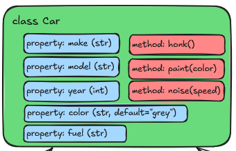
But what if we wanted to add more functionality to our
Car class? We talked about in the previous episode how we
could use Inheritance to create specialized versions of the
Car class, like this:
The code might look something like this:
PYTHON
class Car:
def __init__(self, make: str, model: str, year: int, color: str = "grey", fuel: str = None):
self.make = make
self.model = model
self.year = year
self.color = color
self.fuel = fuel
def honk(self) -> str:
return "beep"
def paint(self, new_color: str) -> None:
self.color = new_color
def noise(self) -> str:
raise NotImplementedError("Subclasses must implement this method")
class CarGasEngine(Car)
def __init__(self, make: str, model: str, year: int, color: str = "grey"):
super().__init__(make, model, year, color, fuel="gasoline")
def noise(self, speed: int) -> str:
if speed <= 10:
return "put put put"
elif speed > 10:
return "vrooom"
class CarElectricEngine(Car)
def __init__(self, make: str, model: str, year: int, color: str = "grey"):
super().__init__(make, model, year, color, fuel="electric")
def noise(self, speed: int) -> str:
return "hmmmmmm"But what happens if we start adding more kinds of engines? Or if our
engines start getting more complex, with different properties and
methods? Even worse, what if we want to add a new type of car component,
like Wheels? Do we now need to start creating subclasses
for every possible combination of car, engine, and wheels? We would end
up with a lot of subclasses, some of which might have extremely similar
(if not identical) functionality.
Instead, we can use a Compositional approach by making a new kind of
class called Engine, and then including an instance of that
class as a property of the Car class. This way, we can
create different kinds of engines as separate classes, and then use them
in our Car class without having to create a new subclass
for each one. Here’s how that would look:
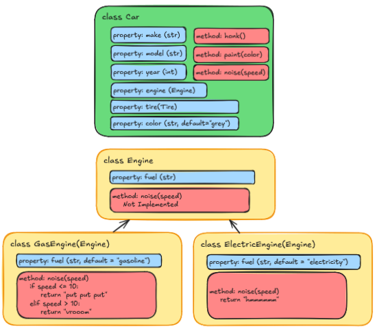
PYTHON
class Car:
def __init__(self, make: str, model: str, year: int, color: str = "grey", engine: Engine = None):
self.make = make
self.model = model
self.year = year
self.color = color
self.engine = engine
def honk(self) -> str:
return "beep"
def paint(self, new_color: str) -> None:
self.color = new_color
def noise(self, speed: int) -> str:
if self.engine:
return self.engine.noise(speed)
raise ValueError("Car must have an engine")
class Engine:
def __init__(self, fuel: str):
self.fuel = fuel
def noise(self, speed: int) -> str:
raise NotImplementedError("Subclasses must implement this method")
class GasEngine(Engine):
def __init__(self):
super().__init__(fuel="gasoline")
def noise(self, speed: int) -> str:
if speed <= 10:
return "put put put"
elif speed > 10:
return "vrooom"
class ElectricEngine(Engine):
def __init__(self):
super().__init__(fuel="electric")
def noise(self, speed: int) -> str:
return "hmmmmmm"At first glance this might look even more complicated, but it has several advantages:
-
Separation of Concerns: The
Engineclass is responsible for engine-specific behavior, while theCarclass focuses on car-specific behavior. This makes the code easier to understand and maintain. -
Reusability: The
Engineclass can be reused in other contexts, such as in aTruckorMotorcycleclass, without duplicating code. -
Flexibility: We can easily add new types of engines
by creating new subclasses of
Engine, without having to modify theCarclass or create new subclasses ofCar.
Think about if we added a Tire class as well. We could
have different types of tires (e.g., Road Tires, Racing Tires, Snow
Tires, etc.) and then include an instance of the Tire class
in the Car class. This would allow us to mix and match
different types of engines and tires without having to create a new
subclass for every possible combination.
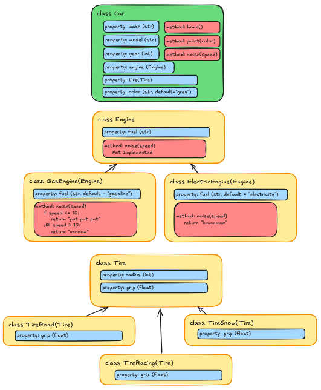
Refactoring our Document Example
Let’s take this concept and apply it to our Document
example from previous episodes. We can create a new class called
Reader that is responsible for reading files and providing
the content to the Document class. We can have a different
reader type for each file format we want to support.
To start with, let’s create a directory for our readers called
readers, and then create a base class called
BaseReader in a file called
readers/base_reader.py:
PYTHON
from abc import ABC, abstractmethod
class BaseReader(ABC):
@abstractmethod
def get_content(self, filepath: str) -> str:
pass
@abstractmethod
def get_metadata(self, filepath: str) -> dict:
passThen we’ll create a TextReader class in a file called
readers/text_reader.py. We’ll move over the logic for
reading and extracting content from a Project Gutenberg text file
here:
PYTHON
import re
from .base_reader import BaseReader
class TextReader(BaseReader):
TITLE_PATTERN = r"^Title:\s*(.*?)\s*$"
AUTHOR_PATTERN = r"^Author:\s*(.*?)\s*$"
ID_PATTERN = r"^Release date:\s*.*?\[eBook #(\d+)\]"
CONTENT_PATTERN = r"\*\*\* START OF THE PROJECT GUTENBERG EBOOK .*? \*\*\*(.*?)\*\*\* END OF THE PROJECT GUTENBERG EBOOK .*? \*\*\*"
def read(self, filepath: str) -> str:
with open(filepath, encoding="utf-8") as file_obj:
return file_obj.read()
def _extract_metadata_element(self, pattern: str, text: str) -> str | None:
match = re.search(pattern, text, re.MULTILINE)
if match:
return match.group(1).strip()
return None
def get_content(self, filepath: str) -> str:
raw_text = self.read(filepath)
match = re.search(self.CONTENT_PATTERN, raw_text, re.DOTALL)
if match:
return match.group(1).strip()
raise ValueError(f"File {filepath} is not a valid Project Gutenberg Text file.")
def get_metadata(self, filepath: str) -> dict:
raw_text = self.read(filepath)
title = self._extract_metadata_element(self.TITLE_PATTERN, raw_text)
author = self._extract_metadata_element(self.AUTHOR_PATTERN, raw_text)
extracted_id = self._extract_metadata_element(self.ID_PATTERN, raw_text)
return {
"title": title,
"author": author,
"id": int(extracted_id) if extracted_id else None,
}Next, we’ll do the same for the HTML code. Create a file called
readers/html_reader.py:
PYTHON
import re
from bs4 import BeautifulSoup
from .base_reader import BaseReader
class HTMLReader(BaseReader):
URL_PATTERN = "^https://www.gutenberg.org/files/([0-9]+)/.*"
def read(self, filepath) -> BeautifulSoup:
with open(filepath, encoding="utf-8") as file_obj:
parsed_file = BeautifulSoup(file_obj, features="html.parser")
if not parsed_file:
raise ValueError("The file could not be parsed as HTML.")
return parsed_file
def get_content(self, filepath) -> str:
parsed_file = self.read(filepath)
# Find the first h1 tag (The book title)
title_h1 = parsed_file.find("h1")
# Collect all the content after the first h1
content = []
for element in title_h1.find_next_siblings():
text = element.get_text(strip=True)
# Stop early if we hit this text, which indicate the end of the book
if "END OF THE PROJECT GUTENBERG EBOOK" in text:
break
if text:
content.append(text)
return "\n\n".join(content)
def get_metadata(self, filename) -> str:
parsed_file = self.read(filename)
title = parsed_file.find("meta", {"name": "dc.title"})["content"]
author = parsed_file.find("meta", {"name": "dc.creator"})["content"]
url = parsed_file.find("meta", {"name": "dcterms.source"})["content"]
extracted_id = re.search(self.URL_PATTERN, url, re.DOTALL)
id = int(extracted_id.group(1)) if extracted_id.group(1) else None
return {"title": title, "author": author, "id": id}Finally, we can update our Document class to use these
readers. We’ll add a new parameter to the Document
constructor called reader, which will be an instance of a
BaseReader subclass. Here’s how the updated
Document class might look:
PYTHON
from textanalysis_tool.readers.base_reader import BaseReader
class Document:
@property
def gutenberg_url(self) -> str | None:
if self.id:
return f"https://www.gutenberg.org/cache/epub/{self.id}/pg{self.id}.txt"
return None
@property
def line_count(self) -> int:
return len(self.content.splitlines())
def __init__(self, filepath: str, reader: BaseReader):
self.filepath = filepath
self.content = reader.get_content(filepath)
metadata = reader.get_metadata(filepath)
self.title = metadata.get("title")
self.author = metadata.get("author")
self.id = metadata.get("id")
def get_word_occurrence(self, word: str) -> int:
return self.content.lower().count(word.lower())Key Points
Ok, that’s a lot of changes. So what was that all about?
- Modularity: Our code is now made up of smaller, more focused classes. The code responsible for reading files in and parsing the contents is separate from the code that represents a document and provides analysis.
-
Extensibility: We can easily add support for new
file formats by creating new reader classes that inherit from
BaseReader, without having to modify theDocumentclass. - Maintainability: Each class has a single responsibility, making it easier to understand and maintain.
- Reusability: The reader classes can be reused in other contexts, such as in a different application that needs to read and parse files.
Also note that in the Document class, in the
__init__ method, the typehint for the reader
parameter is BaseReader. This means that any subclass of
BaseReader can be passed in, allowing for flexibility in
the type of reader used.
By using Inheritance and an abstract base class for the reader, we
are essentially creating a promise that any subclass of
BaseReader will implement the methods defined in the base
class. This is how we can safely call reader.get_content()
and reader.get_metadata() in the Document
class - we no longer care what specific type of reader it is, as long as
it adheres to the abstract base class interface.
Testing the New Objects
We can now delete our two inherited classes DocumentText
and DocumentHTML, and update our tests to use the new
TextReader and HTMLReader classes. This,
however means that we need to rewrite our tests to use the new
Document constructor, which requires a
BaseReader subclass instance.
Because of our new Compositional design, we can now test the
Document without a specific reader by using a mock reader.
This allows us to isolate the Document class and test its
functionality without relying on the actual file reading and parsing
logic:
PYTHON
import pytest
from textanalysis_tool.document import Document
from textanalysis_tool.readers.base_reader import BaseReader
class MockReader(BaseReader):
def get_content(self, filepath: str) -> str:
return "This is a test document. It contains words.\nIt is only a test document."
def get_metadata(self, filepath: str) -> dict:
return {
"title": "Test Document",
"author": "Test Author",
"id": 1234,
}
def test_create_document():
doc = Document(filepath="dummy_path.txt", reader=MockReader())
assert doc.title == "Test Document"
assert doc.author == "Test Author"
assert isinstance(doc.id, int) and doc.id == 1234
def test_line_count():
doc = Document(filepath="dummy_path.txt", reader=MockReader())
assert doc.line_count == 2
def test_get_word_occurrence():
doc = Document(filepath="dummy_path.txt", reader=MockReader())
assert doc.get_word_occurrence("test") == 2This time we are using a MockReader class that
implements the BaseReader interface. We could also use a
fixture here, but this is simpler for demonstration purposes.
Challenge 1: Writing Tests for the Readers
Now that we have our TextReader and
HTMLReader classes, we need to write tests for them. Create
a new directory called tests/readers, and then create two
new test files: test_text_reader.py and
test_html_reader.py. Write tests for the
get_content and get_metadata methods of each
reader based on our previous tests for the
PlainTextDocument and HTMLDocument
classes.
tests/readers/test_text_reader.py
PYTHON
import pytest
from unittest.mock import mock_open
from textanalysis_tool.readers.text_reader import TextReader
TEST_DATA = """
Title: Test Document
Author: Test Author
Release date: January 1, 2001 [eBook #1234]
Most recently updated: February 2, 2002
*** START OF THE PROJECT GUTENBERG EBOOK TEST ***
This is a test document. It contains words.
It is only a test document.
*** END OF THE PROJECT GUTENBERG EBOOK TEST ***
"""
@pytest.fixture(autouse=True)
def mock_file(monkeypatch):
mock = mock_open(read_data=TEST_DATA)
monkeypatch.setattr("builtins.open", mock)
return mock
def test_get_content():
reader = TextReader()
content = reader.get_content("dummy_path.txt")
assert "This is a test document." in content
assert "It is only a test document." in content
def test_get_metadata():
reader = TextReader()
metadata = reader.get_metadata("dummy_path.txt")
assert metadata["title"] == "Test Document"
assert metadata["author"] == "Test Author"
assert metadata["id"] == 1234tests/readers/test_html_reader.py
PYTHON
import pytest
from unittest.mock import mock_open
from textanalysis_tool.readers.html_reader import HTMLReader
TEST_DATA = """
<head>
<meta name="dc.title" content="Test Document">
<meta name="dcterms.source" content="https://www.gutenberg.org/files/1234/1234-h/1234-h.htm">
<meta name="dc.creator" content="Test Author">
</head>
<body>
<h1>Test Document</h1>
<p>
This is a test document. It contains words.
It is only a test document.
</p>
</body>
"""
@pytest.fixture(autouse=True)
def mock_file(monkeypatch):
mock = mock_open(read_data=TEST_DATA)
monkeypatch.setattr("builtins.open", mock)
return mock
def test_get_content():
reader = HTMLReader()
content = reader.get_content("dummy_path.html")
assert "This is a test document." in content
assert "It is only a test document." in content
def test_get_metadata():
reader = HTMLReader()
metadata = reader.get_metadata("dummy_path.html")
assert metadata["title"] == "Test Document"
assert metadata["author"] == "Test Author"
assert metadata["id"] == 1234Challenge 2: Adding a New Reader
We have one last file type we haven’t added support for yet: Epub.
Create a new reader class for epub files called EpubReader
in a file called readers/epub_reader.py. You can use the
ebooklib package to read epub files. You can install it
with pip:
You can refer to the package documentation here
To get the metadata from an epub file, you can use the
get_metadata method of the EpubBook class.
Project Gutenberg uses the “Dublin Core” metadata standard, so the
namespace is “DC”.
Here’s an example of how to get the title:
The get_metadata method returns a list of tuples, where
the first element is the value and the second element is the attributes,
so we need to access the first element of the first tuple to get the
actual title.
The other metadata fields we need are “creator” (author) and “source” (id).
To get the content from an epub file, we can iterate over all of the
“items” in the book that are a document, then use
BeautifulSoup to extract the text from the HTML
content.
PYTHON
import re
from bs4 import BeautifulSoup
import ebooklib
from textanalysis_tool.readers.base_reader import BaseReader
class EPUBReader(BaseReader):
SOURCE_URL_PATTERN = "https://www.gutenberg.org/files/([0-9]+)/[0-9]+-h/[0-9]+-h.htm"
def read(self, filepath: str) -> ebooklib.epub.EpubBook:
book = ebooklib.epub.read_epub(filepath)
if not book:
raise ValueError("The file could not be parsed as EPUB.")
return book
def get_content(self, filepath):
book = self.read(filepath)
text = ""
for section in book.get_items_of_type(ebooklib.ITEM_DOCUMENT):
content = section.get_content()
soup = BeautifulSoup(content, features="html.parser")
text += soup.get_text()
return text
def get_metadata(self, filepath) -> dict:
book = self.read(filepath)
source_url = book.get_metadata(namespace="DC", name="source")[0][0]
extracted_id = re.search(self.SOURCE_URL_PATTERN, source_url, re.DOTALL).group(1)
metadata = {
"title": book.get_metadata(namespace="DC", name="title")[0][0],
"author": book.get_metadata(namespace="DC", name="creator")[0][0],
"extracted_id": int(extracted_id) if extracted_id else None,
}
return metadata- Composition allows us to build complex functionality by combining several smaller, simpler classes
- Composition promotes separation of concerns, reusability, flexibility, and maintainability
- By using abstract base classes, we can define interfaces that subclasses must implement, allowing for flexibility in our code design
Content from Static Code Analysis
Last updated on 2026-06-23 | Edit this page
Overview
Questions
- What is static code analysis?
- How can static code analysis tools help improve code quality?
Objectives
- Implement
ruffandmypyin a Python project - Understand how to read and fix issues reported by
ruffandmypy
What is Static Code Analysis?
Static code analysis tools are programs or scripts that analyze source code without executing it in order to identify potential issues, bugs, or code smells. These tools can help developers improve code quality, maintainability, and adherence to coding standards.
We’re going to look at two static code analysis tools in this
episode: ruff and mypy.
Each of these tools can be run from the command line, and they can also be integrated into your development workflow, such as in your text editor, as a pre-commit hook, or in your continuous integration (CI) pipeline.
Ruff
Ruff is a fast Python
linter and code formatter that takes over the roles of several other
tools, including flake8, pylint, and
isort.
We can install ruff as a development dependency using
uv:
We can then run ruff on our codebase to identify any
issues:
Did you get any output? Depending on your IDE and it’s settings, you might have already fixed some of the issues.
The default configuration for ruff only checks for a few
types of issues. We can customize the configuration by adding a section
for ruff in our pyproject.toml file:
TOML
[tool.ruff]
# Exclude specific files and directories from ruff
exclude = [
".venv",
"__init__.py",
]
line-length = 100
indent-width = 4
[tool.ruff.format]
quote-style = "double"
indent-style = "space"
skip-magic-trailing-comma = false
line-ending = "auto"
[tool.ruff.lint]
# Enable specific linting rules
# - "D": Docstring-related rules (Not included for this workshop)
# - "E", "W": PEP8 style errors
# - "F": Flake8 compatibility
# - "I": Import-related rules (isort)
# - "B": Bugbear (Extended pycodesyle checks)
# - "PL": Pylint compatibility
# - "C90": McCabe complexity checks (identify code with large numbers of paths - should be refactored)
# - "N": Naming conventions for classes, functions, variables, etc.
# - "ERA": Remove commented out code
# - "RUF": Ruff-specific rules
# - "TID": Tidy Imports
select = ["E", "W", "F", "I", "B", "PL", "C90", "N", "ERA", "RUF", "TID", "SIM"]
# These are Personal preference
# D203 - Don't require a space between the docstring and the class or function definition
# D212 - The summary of the docstring can go on the line below the triple quotes
ignore = ["D203", "D212"]This configuration adds a number of additional rules to check for. This is the output from running this one on our codebase:
I001 [*] Import block is un-sorted or un-formatted
--> src\textanalysis_tool\readers\epub_reader.py:1:1
|
1 | / import re
2 | |
3 | | from bs4 import BeautifulSoup
4 | | import ebooklib
5 | |
6 | | from textanalysis_tool.readers.base_reader import BaseReader
| |____________________________________________________________^
|
help: Organize imports
E501 Line too long (136 > 100)
--> src\textanalysis_tool\readers\text_reader.py:10:101
|
8 | …
9 | …)\]"
10 | …GUTENBERG EBOOK .*? \*\*\*(.*?)\*\*\* END OF THE PROJECT GUTENBERG EBOOK .*? \*\*\*"
| ^^^^^^^^^^^^^^^^^^^^^^^^^^^^^^^^^^^^
11 | …
12 | …
|
I001 [*] Import block is un-sorted or un-formatted
--> tests\readers\test_html_reader.py:1:1
|
1 | / import pytest
2 | | from unittest.mock import mock_open
3 | |
4 | | from textanalysis_tool.readers.html_reader import HTMLReader
| |____________________________________________________________^
5 |
6 | TEST_DATA = """
|
help: Organize imports
PLR2004 Magic value used in comparison, consider replacing `1234` with a constant variable
--> tests\readers\test_html_reader.py:41:30
|
39 | assert metadata["title"] == "Test Document"
40 | assert metadata["author"] == "Test Author"
41 | assert metadata["id"] == 1234
| ^^^^
|
I001 [*] Import block is un-sorted or un-formatted
--> tests\readers\test_text_reader.py:1:1
|
1 | / import pytest
2 | | from unittest.mock import mock_open
3 | |
4 | | from textanalysis_tool.readers.text_reader import TextReader
| |____________________________________________________________^
5 |
6 | TEST_DATA = """
|
help: Organize imports
PLR2004 Magic value used in comparison, consider replacing `1234` with a constant variable
--> tests\readers\test_text_reader.py:40:30
|
38 | assert metadata["title"] == "Test Document"
39 | assert metadata["author"] == "Test Author"
40 | assert metadata["id"] == 1234
| ^^^^
|
PLR2004 Magic value used in comparison, consider replacing `1234` with a constant variable
--> tests\test_document.py:21:50
|
19 | assert doc.title == "Test Document"
20 | assert doc.author == "Test Author"
21 | assert isinstance(doc.id, int) and doc.id == 1234
| ^^^^
|
PLR2004 Magic value used in comparison, consider replacing `2` with a constant variable
--> tests\test_document.py:26:30
|
24 | def test_line_count():
25 | doc = Document(filepath="dummy_path.txt", reader=MockReader())
26 | assert doc.line_count == 2
| ^
|
PLR2004 Magic value used in comparison, consider replacing `2` with a constant variable
--> tests\test_document.py:31:47
|
29 | def test_get_word_occurrence():
30 | doc = Document(filepath="dummy_path.txt", reader=MockReader())
31 | assert doc.get_word_occurrence("test") == 2
| ^
|
Found 9 errors.
[*] 3 fixable with the `--fix` option.Auto-fixing Issues
You notice right away that the end of the message says that 3 of the
issues are fixable with the --fix option. We can run
ruff again with this option to automatically fix these
issues:
Ruff will automatically fix issues that have very clear solutions, such as sorting imports and fixing spacing. This command will modify your source files, so be sure to review the changes just in case, but it should never modify the logic of your code.
Ignoring Files and Rules
Some of the issues reported by ruff don’t really make
sense for our project. For example, it is complaining about “magic
numbers” in our tests. These are numbers that appear directly in the
code without being assigned to a named constant. In tests, this is often
fine, since the numbers are used in a clear context, and assigning them
to a constant variable would just add unnecessary complexity.
We can tell ruff to ignore specific rules for specific
files or directories. We already have an example of this in our
pyproject.toml file, where we tell ruff to
ignore the __init__.py files in our codebase. We can add
the following to ignore the magic number rule (PLR2004) in
our tests directory:
Docstrings
We we had removed the check for docstrings (D) from our
ruff configuration, but let’s just re-enable it for a
moment to see what it reports and how to fix it.
To run ruff on a single file, we can specify the file
path instead of a directory:
It looks like we get six errors, all related to missing docstrings.
What exactly is a docstring?
A docstring is a special type of comment that is used to document a
module, class, method, or function in Python. Docstrings are written
using triple quotes (""") and are placed immediately after
the definition of the module, class, method, or function they are
documenting.
There are several different styles for writing docstrings:
The choice of style often depends on the conventions used in a particular project or organization.
Let’s stick with the Google style for this project. Here’s an example
of a docstring for one of the functions in our Document
class:
PYTHON
def get_word_occurrence(self, word: str) -> int:
"""
Count the number of occurrences of the given word in the document content.
Args:
word (str): The word to count occurrences of.
Returns:
int: The number of occurrences of the word in the document content.
"""
return self.content.lower().count(word.lower())We can see that the Docstring is made up of different sections:
- A brief summary of what the function does
- An
Argssection that describes the function’s parameters - A
Returnssection that describes what the function returns
Docstrings are not interpreted by python, so don’t affect the runtime
behavior of your code. They are primarily for documentation purposes,
and can be accessed using the built-in help() function.
Running the ruff command again shows that we have fixed
one of the issues in this file.
Challenge 1: Docstrings for the Document Class
Add a docstring for the document.py module, the
Document class, and the __init__ method of the
Document class. Make sure to include a brief summary, as
well as Args and Returns sections where
appropriate.
Refer to the Google Style Guide - Comments in Modules section for guidance.
Mypy
One of the common complaints about Python is that it is a dynamically typed language, which can lead to type-related errors that are only caught at runtime. To help mitigate this, Python supports type hints, which allow developers to specify the expected types of variables, function parameters, and return values.
We’ve been using type hints all along in this project, but as these
are only used by the IDE and the user, there’s no guarantee that the
types are actually correct. This is where mypy comes
in.
We can install mypy as a development dependency using
uv:
Then run it on our codebase:
Your output might look something like this:
src\textanalysis_tool\readers\html_reader.py:28: error: Item "None" of "PageElement | None" has no attribute "find_next_siblings" [union-attr]
src\textanalysis_tool\readers\html_reader.py:40: error: Return type "str" of "get_metadata" incompatible with return type "dict[Any, Any]" in supertype "textanalysis_tool.readers.base_reader.BaseReader" [override]
src\textanalysis_tool\readers\html_reader.py:43: error: Value of type "PageElement | None" is not indexable [index]
src\textanalysis_tool\readers\html_reader.py:44: error: Value of type "PageElement | None" is not indexable [index]
src\textanalysis_tool\readers\html_reader.py:45: error: Value of type "PageElement | None" is not indexable [index]
src\textanalysis_tool\readers\html_reader.py:47: error: Item "None" of "Match[str] | None" has no attribute "group" [union-attr]
src\textanalysis_tool\readers\html_reader.py:49: error: Incompatible return value type (got "dict[str, Any]", expected "str") [return-value]
src\textanalysis_tool\readers\epub_reader.py:3: error: Skipping analyzing "ebooklib": module is installed, but missing library stubs or py.typed marker [import-untyped]
src\textanalysis_tool\readers\epub_reader.py:3: note: See https://mypy.readthedocs.io/en/stable/running_mypy.html#missing-imports
src\textanalysis_tool\readers\epub_reader.py:31: error: Item "None" of "Match[str] | None" has no attribute "group" [union-attr]
Found 9 errors in 2 files (checked 7 source files)These errors are slightly more complex than the ones reported by
ruff, but they are also very useful, as the often point to
places where our code might not handle all of the possible cases
correctly.
Fixing Mypy Errors
MyPy Errors can be a bit tricky to understand, as they often involve
a more complex analysis of the code than ruff.
For example, the first error is telling us that we are trying to
access the find_next_siblings method on an object that
could be None. This is a potential bug, as if the object is
None, this will raise an AttributeError at
runtime.
Looking at the project code, the issue is in the
HTMLReader class, in the get_content
method:
PYTHON
def get_content(self, filepath) -> dict:
soup = self.read(filepath)
# Find the first h1 tag (The book title)
title_h1 = soup.find("h1")
# Collect all the content after the first h1
content = []
for element in title_h1.find_next_siblings():
text = element.get_text(strip=True)
# Stop early if we hit this text, which indicate the end of the book
if "END OF THE PROJECT GUTENBERG EBOOK" in text:
break
if text:
content.append(text)
return "\n\n".join(content)The soup.find("h1") call will return None
if no h1 tag is found in the HTML document. We should
probably add a check for this case and raise a more informative error
message.
PYTHON
def get_content(self, filepath) -> dict:
soup = self.read(filepath)
# Find the first h1 tag (The book title)
title_h1 = soup.find("h1")
if title_h1 is None:
raise ValueError(f"No <h1> tag found in the HTML document: {filepath}")
# Collect all the content after the first h1
content = []
for element in title_h1.find_next_siblings():
text = element.get_text(strip=True)
# Stop early if we hit this text, which indicate the end of the book
if "END OF THE PROJECT GUTENBERG EBOOK" in text:
break
if text:
content.append(text)
return "\n\n".join(content)Note that we don’t have to actually change the code in the for loop,
as mypy is smart enough to understand that if
title_h1 is none, then the ValueError will be
raised, and the code following it will not be executed.
Challenge 1: Fix a Mypy Error
Another error we get is related to the get_metadata
method in the same class:
src\textanalysis_tool\readers\html_reader.py:45: error: Value of type "PageElement | None" is not indexable [index]
src\textanalysis_tool\readers\html_reader.py:46: error: Value of type "PageElement | None" is not indexable [index]
src\textanalysis_tool\readers\html_reader.py:47: error: Value of type "PageElement | None" is not indexable [index]Why is this error being reported? What can we do to fix it? (There’s
actually two issues here! One is a more specific
BeautifulSoup issue, and the other is a more general Python
issue.)
Values in python dictionaries can be accessed in two ways:
- Using the indexing syntax:
value = my_dict[key] - Using the
getmethod:value = my_dict.get(key)
The indexing syntax will raise a KeyError if the key is
not found in the dictionary, while the get method will
return None (or a default value if provided) if the key is
not found.
There are several kinds of values that can be returned from a
BeautifulSoup.find call, and we can’t really be certain of
which type we will get back. It could be a Tag, a
NavigableString, a PageElement, or
None.
There is an alternative method called select_one that
can be used to find elements using plain CSS selectors, and it always
returns either a Tag or None, which lets us
avoid some of the complexity of dealing with multiple possible
types.
soup.find("meta", {"name": "dc.title"}) can be replaced
with soup.select_one('meta[name="dc.title"]')
MyPy is pointing out that we are using the indexing syntax to access values in a dictionary, but given the way we are pulling the data out of the text, it is possible that the key might not even be present in the dictionary.
We can fix this by using the get method instead, and
providing a default value of None if the key is not
found.
PYTHON
title_element = soup.select_one('meta[name="dc.title"]')
title = title_element.get("content") if title_element else "Unknown Title"
author_element = soup.select_one('meta[name="dc.creator"]')
author = author_element.get("content") if author_element else "Unknown Author"
url_element = soup.select_one('meta[name="dcterms.source"]')
url = url_element.get("content") if url_element else "Unknown URL"Challenge 2: Fixing Other Mypy Errors
You should have at least one other mypy error in the
HTMLReader class. Can you find it and fix it? Do you have
any other mypy errors in other parts of the codebase? If so, can you fix
those as well?
It will depend on your code!
- There are many static code analysis tools available for Python, each with its own strengths and weaknesses.
- Ruff is a fast linter and code formatter that can replace several
other tools, including
flake8,pylint, andisort. - MyPy is a static type checker that can help catch type-related errors in Python code.
Content from Building and Deploying a Package
Last updated on 2026-06-23 | Edit this page
Overview
Questions
- How do we build and deploy our project as a package?
Objectives
- Deploy our project locally as a python package
- Set up Github Actions to automatically build and deploy our package
Building Locally
Since we have been using uv all along and have our
pyproject.toml set up, building our package is as simple as
running:
You should see some output that looks like this:
Building source distribution...
Building wheel from source distribution...
Successfully built dist\textanalysis_tool-0.1.0.tar.gz
Successfully built dist\textanalysis_tool-0.1.0-py3-none-any.whlAnd a new directory called dist/ should appear in your
project folder. Inside that directory, you should see two files:
-
textanalysis_tool-0.1.0-py3-none-any.whl: This is the wheel file, which is a built package that can be installed. -
textanalysis_tool-0.1.0.tar.gz: This is the source distribution, which contains the source code of your package.
What Exactly are these files?
A Wheel file is a built package that can be installed using pip. It contains all the necessary files for your package to run, including compiled code if applicable. Wheels are the preferred format for Python packages because they are faster to install and can include pre-compiled binaries.
Why is it called a “wheel”?
The term “wheel” is used because the original name for PyPi was “cheese shop” (a reference to a Monty Python sketch), and a wheel of cheese is a common image associated with cheese shops.
The source distribution is a tarball that contains the source code of
your package. You can open it with a tool like tar or
7-Zip to see the contents. It includes all the files needed
to build and install your package, including the
pyproject.toml file and any other source files.
GitHub Actions
Building the package locally is great for testing, but what we actually want is to have our package built and automatically deployed from GitHub, so that anyone using our package can always get the latest version. GitHub Actions is a tool that allows us to automate tasks in our GitHub repository by configuring a workflow using a YAML file.
Setting Up the Workflow
In your project, create a new directory called
.github/workflows/. Inside that directory, create a new
file called build.yml. This file will contain the
configuration for our GitHub Actions workflow.
Here is the build.yml file we will use:
YAML
name: Build and Deploy Package
on:
push:
tags:
- '[0-9]+.[0-9]+.[0-9]+*' # Deploy when we tag with a semantic version
jobs:
build:
runs-on: ubuntu-latest # Use the most up-to-date Ubuntu runner
permissions:
contents: write # Required to create releases
steps:
- uses: actions/checkout@v4 # Check out the repository
# Create a Python environment
- name: Set up Python
uses: actions/setup-python@v4
with:
python-version: '3.11'
# Install uv
- name: Install uv
uses: astral-sh/setup-uv@v3
# Build the package
- name: Build Package
run: uv build
# Upload the built package to the repository as an artifact
- name: Upload Artifacts
uses: actions/upload-artifact@v4
with:
name: textanalysis-tool
path: dist/
# Create GitHub Release with artifacts
- name: Create Release
uses: softprops/action-gh-release@v1
with:
files: dist/*
generate_release_notes: true
env:
GITHUB_TOKEN: ${{ secrets.GITHUB_TOKEN }}
# Publish to TestPyPI
- name: Publish to TestPyPI
run: |
uv publish --publish-url https://test.pypi.org/legacy/ --username __token__ --password ${{ secrets.TEST_PYPI_API_TOKEN }}Setting up PyPI
Because we are not ready to publish our package to the main PyPI repository, we will use TestPyPI, which is a separate instance of the Python Package Index that allows you to test package publishing and installation without affecting the real PyPI.
For this you will need to have an account on TestPyPI with 2-Factor enabled. You can create an account at https://test.pypi.org/account/register/.
Once your account is set up, go to your account settings and create
an API token with the name github-actions. Copy the token
to your clipboard.
Next, we need to store the token in our GitHub repository as a
secret. Go to your repository on GitHub, click on “Settings”, then
“Secrets and variables”, and then “Actions”. Click on “New repository
secret” and name it TEST_PYPI_API_TOKEN. Paste your token
into the “Value” field and click “Add secret”.
Triggering the Workflow
git add, git commit, and
git push this file to your repository. You should see a new
“Actions” tab in your GitHub repository. Click on it, and you should see
your workflow listed there:
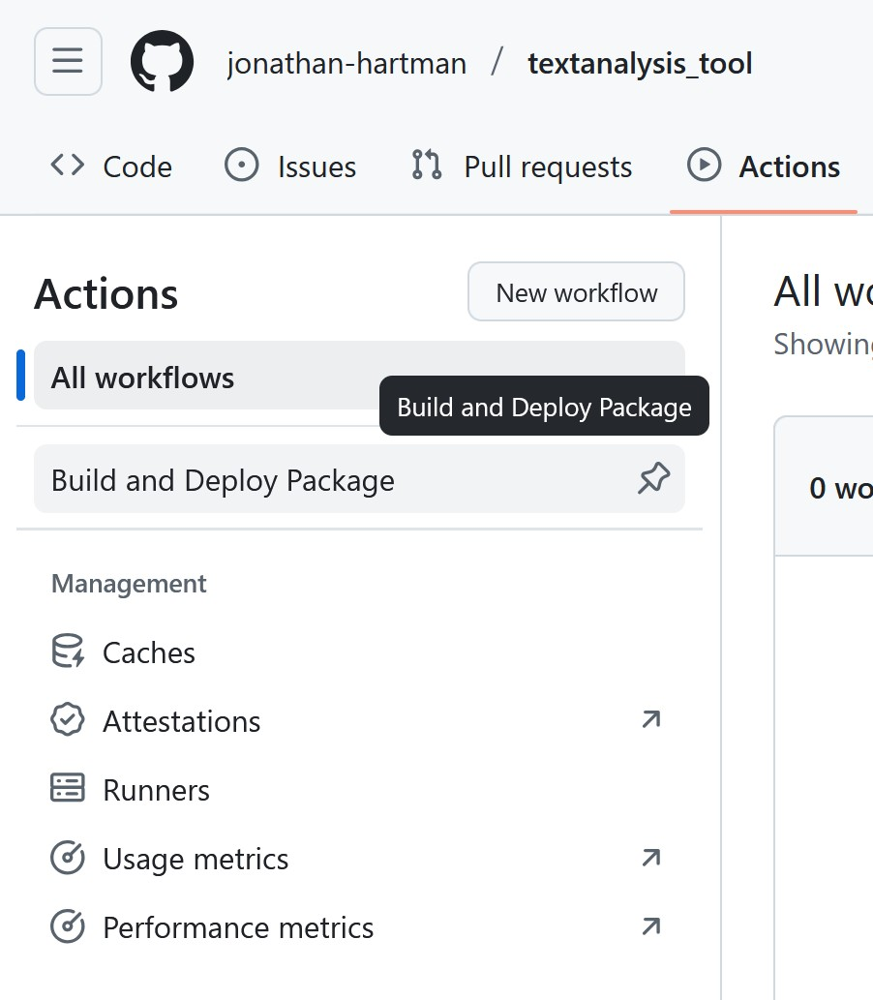
But nothing has run yet! This is because we have configured our workflow to only run when we push a tag that follows a semantic version format (0.1.0, 1.0.0, etc.). This is a common practice for deploying packages, as it allows us to control when a new version of our package is released.
Let’s create a new tag and push it to our repository. You can do this using the following commands:
Looking back at the “Actions” tab, you should see that your workflow has started running! Our project is pretty small, so it should finish quickly. Clicking on the workflow will show you the steps that were executed:
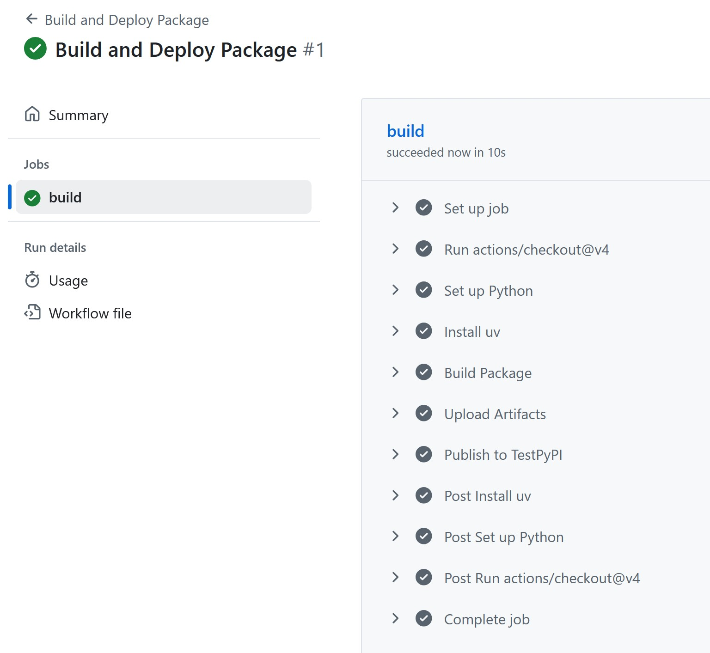
You can see the “Setup Python”, “Install uv”, “Build Package”, and
“Upload Artifacts” steps that we defined in our build.yml
file, as well as some additional steps before and after that GitHub
automatically adds. If everything went well, you should see a green
check mark next to each step.
Clicking on any given job will give some additional details, including the console output.
Github Actions is free for public repositories, but does have limits on the amount of compute time you can use per month. As of September 2025, the limit is 2,000 minutes per month. This is generally more than enough for most open source projects.
Finding the Built Package
So our workflow is successful, but where is our package? Our little script actually put our project in three places:
- As an artifact in our GitHub repository for this workflow run
- As a release in our GitHub repository
- On TestPyPI as a package
The Artifact can be found in the “Actions” tab, by clicking on the
workflow run, and then clicking on the “Artifacts” section on the right
side of the page. You can download the artifact as a ZIP file, which
contains the dist/ directory with our built package files.
(This is identical to what we built locally earlier.)
The Release can be found by clicking on the “Releases” link on the
right side of your GitHub repository page. You should see a new release
with the tag 0.1.0, and the built package files attached as
assets.
Finally, the package can be found on TestPyPI by going to https://test.pypi.org/project/textanalysis-tool-{my-name}/.
Installing our package from TestPyPI
Now that our package is published on TestPyPI, we can install it into any Python environment using a package manager. Because we are using test.pypi.org, we need to specify the index URL when installing the package, which we do not have to do for packages on the main PyPI repository.
Create a new virtual environment in a clean folder with uv:
Then install our package from TestPyPI using pip:
You should see output indicating that pip is downloading and installing our package. Once the installation is complete, you can verify that the package is installed by running:
Continuous Integration / Continuous Deployment (CI/CD)
One of the advantages of using an automated process like GitHub
Actions is that we can also easily add additional steps to our workflow.
In previous episodes, we have added unit tests to our project, as well
as static code analysis using ruff and mypy.
We can easily add these steps to our workflow to ensure that our code is
always tested and checked before it is built and deployed.
Here’s the updated build.yml file with the additional
steps:
YAML
name: Build and Deploy Package
on:
push:
tags:
- '[0-9]+.[0-9]+.[0-9]+*' # Deploy when we tag with a semantic version
jobs:
build:
runs-on: ubuntu-latest # Use the most up-to-date Ubuntu runner
permissions:
contents: write # Required to create releases
steps:
- uses: actions/checkout@v4 # Check out the repository
# Create a Python environment
- name: Set up Python
uses: actions/setup-python@v4
with:
python-version: '3.11'
# Install uv
- name: Install uv
uses: astral-sh/setup-uv@v3
# Install project with dev dependencies
- name: Install dependencies
run: uv sync --dev
# Static Code Analysis with ruff
- name: Run ruff
run: uv run ruff check .
# Type Checking with mypy
- name: Run mypy
run: uv run mypy src
# Running Tests with pytest
- name: Run tests
run: uv run pytest tests
# Build the package
- name: Build Package
run: uv build
# Upload the built package to the repository as an artifact
- name: Upload Artifacts
uses: actions/upload-artifact@v4
with:
name: textanalysis-tool
path: dist/
# Create GitHub Release with artifacts
- name: Create Release
uses: softprops/action-gh-release@v1
with:
files: dist/*
generate_release_notes: true
env:
GITHUB_TOKEN: ${{ secrets.GITHUB_TOKEN }}
# Publish to TestPyPI
- name: Publish to TestPyPI
run: |
uv publish --publish-url https://test.pypi.org/legacy/ --username __token__ --password ${{ secrets.TEST_PYPI_API_TOKEN }}Update the version number in your pyproject.toml file to
0.2.0, and then create a new tag and push it to your
repository:
Now, unless you already went through in the earlier episodes, you
will likely see that the ruff , mypy, or
pytest steps fail. This is great! It means that we have
caught issues in our code before they made it into a release! Only once
all the tests pass and the code checks are clean will the package be
built and deployed.
Making a new tag for each release is good practice, however there are also occasions where you might want to run some of these jobs regularly when merging in code, or on pushes to certain branches. This is possible - there is an example of this in the Workshop Addendum.
Challenge 1:
- We can build our package locally using
uv build, which creates adist/directory with the built package files. - We can use GitHub Actions to automate the building and deployment of our package.
- GitHub Actions workflows are defined using YAML files in the
.github/workflows/directory. - We can trigger our workflow to run on specific events, such as pushing a tag that follows semantic versioning.
- We can add additional steps to our workflow, such as running tests and static code analysis, to ensure code quality before deployment.
Content from Multiprocessing
Last updated on 2026-06-23 | Edit this page
Overview
Questions
- How can I speed up my code by running multiple processes at the same time?
- What is multiprocessing and when should I use it?
Objectives
- Explain the concept of multiprocessing and how it can improve performance in certain situations.
- Demonstrate how to use the
multiprocessingmodule in Python to run multiple processes concurrently. - Show how to use
Queuefor communication between processes andPoolfor managing a group of worker processes.
multiprocessing
Normally we run our programs one after another in Python.
So program2 waits for program1 to finish in order to execute. But in some cases, it might take very long for program1 to run:
In this example, we could choose to use multiprocessing instead of waiting for the pull_data function to finish executing.
When exactly to use multiprocessing?
Multiprocessing is useful for CPU-bound programs.
CPU-bound programs are those whose performance is limited by the CPU’s speed.
Which processes are CPU-bound?
When we want to process large amounts of data or images, the program’s performance will depend largely on the CPU. It is also useful for mathematical/scientific calculations, as these can take some time to execute as well.
Multiprocessing is not suitable for every job and creating a new process is costly!
The multiprocessing module in Python includes several modules. One of
these is the Queue module, which enables communication
between processes. Normally, the memory spaces of two processes are
separate; therefore, they cannot access each other’s variables, etc.
process1 cannot see y, and vice versa.
So we use the multiprocessing.Queue module to
communicate safely. process1() can pass its data using
multiprocessing.Queue():
A process can put data into a queue using put(), and another process can get it using get().
PYTHON
def process1(queue):
x = 1
queue.put(x)
def process2(queue):
value_process2 = queue.get()
print("Received: ", value_process2)
y = 2Let’s say we have a restaurant and we take orders using this take_order function.
PYTHON
import time
from multiprocessing import Queue
def take_orders(queue, start_time):
# waiter puts orders into the queue one by one
orders = ["Pizza", "Burger", "Pasta", "Sushi", "Salad"]
for order in orders:
print(f"{time.time() - start_time:.2f}s - Order received: {order}")
queue.put(order)
time.sleep(1) # assume the order is taken in 1 second
queue.put(None) # signal: no more orders comingWe put a time check to see when the order is received.
And we also need to prepare the orders that we took from our guests.
PYTHON
def prepare_orders(queue, start_time):
while True:
order = queue.get()
if order is None:
break
print(f"{time.time() - start_time:.2f}s - Preparing: {order}")
time.sleep(2) # we assume it's being prepared in 2 secondsIn these two functions we used Queue because we needed
to exchange the orders safely between the function that takes them and
prepares them.
Let’s call these two functions in main() to see when
they run.
PYTHON
if __name__ == "__main__":
queue = Queue()
start_time = time.time()
take_orders(queue, start_time)
prepare_orders(queue, start_time)Output:
0.00s - Order received: Pizza
1.00s - Order received: Burger
2.00s - Order received: Pasta
3.00s - Preparing: Pizza
5.00s - Preparing: Burger
7.00s - Preparing: PastaThe timestamps show that all orders are received first. The preparation doesn’t start until after that.
Now we can try to call the functions with the help of the
Process module.
With the help of Process, we can start our program as a
separate process instead of waiting for the main program to finish.
PYTHON
if __name__ == "__main__":
queue = Queue()
start_time = time.time()
waiter = Process(target=take_orders, args=(queue, start_time))
kitchen = Process(target=prepare_orders, args=(queue, start_time))
waiter.start()
kitchen.start()
# we make the main program wait for these processes to finish
waiter.join()
kitchen.join()Output:
0.01s - Order received: Pizza
0.02s - Preparing: Pizza
1.01s - Order received: Burger
2.01s - Order received: Pasta
2.02s - Preparing: Burger
4.03s - Preparing: PastaHere, take_orders and prepare_orders run in separate processes.
We can see from the timestamps that the kitchen does not wait until all orders are received. While the waiter continues taking orders, the kitchen already starts preparing them.
This shows the main idea of multiprocessing: independent tasks can make progress during the same time period.
As you can see, we created the processes manually here, using
Process. But that’s not always necessary. Instead, we can
create a group of worker processes that automatically share the work,
like hiring several cooks to prepare multiple orders instead of
assigning each order manually.
To do that, we could use Pool from
multiprocessing. We also need to make a small change to our
prepare_orders function.
PYTHON
from multiprocessing import Pool
def prepare_orders(args):
order, start_time = args # we unpack tuple, since pool.map sends single argument
print(f"{time.time() - start_time:.2f}s - Preparing: {order}")
time.sleep(2)
return f"{order} ready" # pool.map collects return values
if __name__ == "__main__":
start_time = time.time()
orders = ["Pizza", "Burger", "Pasta", "Sushi", "Salad"]
with Pool(processes=3) as pool:
order_status = pool.map(
prepare_orders, [(order, start_time)
for order in orders])
print(order_status)Output:
0.05s - Preparing: Pizza
0.05s - Preparing: Burger
0.05s - Preparing: Pasta
2.06s - Preparing: Sushi
2.06s - Preparing: SaladYou can see that the first 3 orders are being prepared at the same
time, because Pool(processes=3) creates 3 worker processes.
After first 3 orders start, the remaining orders wait in line until one
of the workers becomes available. Since it takes 2 seconds to prepare an
order, we can see that after 2 seconds the 4th and 5th orders start
being prepared.
The important thing here is that we did not create each process manually. After creating the pool, it distributes the jobs between the worker processes automatically.
Challenge 1:
- Multiprocessing allows us to run multiple processes concurrently, which can improve performance for CPU-bound tasks.